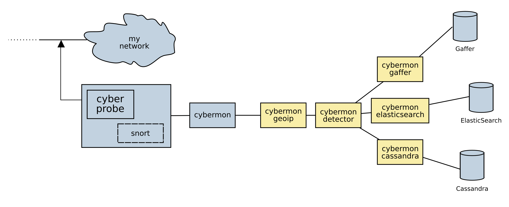

This is the manual for Cyberprobe (version 2.4.1, 26 December 2019).
Cyberprobe is a network packet inspection toolkit (Deep Packet Inspection) for real-time monitoring of networks. This has applications in network monitoring, intrusion detection, forensic analysis, and as a defensive platform. Cyberprobe packet inspection works on physical networks, and also in cloud VPCs. There are features that allow cloud-scale deployments.
This is not a single, monolithic intrusion detection toolkit which does everything you want straight out of the box. If that’s what you need, I would suggest you look elsewhere. Instead, Cyberprobe is a set of flexible components which can combined in many ways to manage a wide variety of packet inspection tasks. If you want to build custom network analytics there are many interfaces that make this straightforward.
The project maintains a number of components, including:
cyberprobe, which collects data packets and forwards them a network
stream protocol in real time. Packet collection can be target with IP
addresses, CIDR ranges or full-take. Collected packets are tagged with a
device identifier. cyberprobe can be integrated with Snort to allow
dynamic targeting of IP addresses in response to a Snort rule hitting.
cybermon, which receives collected packet streams, performs stateful
processing and creates a stream of observations describing network events.
The events can be consumed in many different ways e.g. the events can be
delivered to a pub/sub system, or presented to a gRPC service.
The event handling is implemented as a function written in Lua, so you can
add your own custom event handling.
The architecture has support for AWS Traffic Mirroring, and supports cloud-scale deployments.
Next: Obtaining the software, Previous: Top, Up: Top [Index]
Cyberprobe is a network packet inspection toolkit (Deep Packet Inspection) for real-time monitoring of networks. This has applications in network monitoring, intrusion detection, forensic analysis, and as a defensive platform. Cyberprobe packet inspection works on physical networks, and also in cloud VPCs. There are features that allow cloud-scale deployments.
This is not a single, monolithic intrusion detection toolkit which does everything you want straight out of the box. If that’s what you need, I would suggest you look elsewhere. Instead, Cyberprobe is a set of flexible components which can combined in many ways to manage a wide variety of packet inspection tasks. If you want to build custom network analytics there are many interfaces that make this straightforward.
The project maintains a number of components, including:
cyberprobe, which collects data packets and forwards them a network
stream protocol in real time. Packet collection can be target with IP
addresses, CIDR ranges or full-take. Collected packets are tagged with a
device identifier. cyberprobe can be integrated with Snort to allow
dynamic targeting of IP addresses in response to a Snort rule hitting.
cybermon, which receives collected packet streams, performs stateful
processing and creates a stream of observations describing network events.
The events can be consumed in many different ways e.g. the events can be
delivered to a pub/sub system, or presented to a gRPC service.
The event handling is implemented as a function written in Lua, so you can
add your own custom event handling.
The probe, cyberprobe has the following features:
The monitor tool, cybermon has the following features:
cyberprobe instances.
The code is targeted at the Linux platform, although it is generic enough to be applicable to other UN*X-like platforms.
The event stream from cybermon can be presented to RabbitMQ
in a JSON form, which can then be delivered to further analytics:
cybermon-alert reports indicator hits in events to standard output.
cybermon-bigquery loads events into GCP BigQuery.
cybermon-cassandra loads events into Cassandra.
cybermon-detector studies events for the presence of indicators.
Events are annotated with indicator hits of any are observed.
cybermon-dump dumps raw event JSON to standard output.
cybermon-elasticsearch loads events into ElasticSearch.
cybermon-gaffer loads network information into Gaffer (a graph
database).
cybermon-geoip looks up IP addresses in GeoIP and annotates
events with location information.
cybermon-monitor outputs event information to standard output.
The architecture has support for AWS Traffic Mirroring, and supports cloud-scale deployments:
cyberprobe instances can load-share across multiple
cybermon instances behind a load-balancer.
cybermon can be delivered to a pub/sub system
to distribute load and permit scale-up.
The easiest way to learn about the software is to follow our Quick Start tutorial.
Cyberprobe release highlights:
2.4cybermon-detector refactored to use FSM-based evaluation of
boolean expressions.
2.3cyberprobe-cli and control API reworked, protobuf and gRPC support.
Amazon Linux support.
2.2Changed cyberprobe configuration file to use JSON instead of XML. JSON is easier to integrate with automated processes.
2.0.5Added VXLAN support to cybermon. This allows cybermon to receive the VXLAN protocol which is e.g. used by AWS Traffic Mirroring.
2.0New simpler Lua API. Native JSON encoding boosts performance of JSON output by 500%.
1.13Cybermon decodes for: TLS, GRE, ESP.
1.12.3Brought subscribers and docker-compose files up-to-date.
1.11.1Altered handling of ‘origin’ to make it more resilient.
1.11.0Added ‘origin’ field to identify whether or not the triggering device caused an event.
1.10.0Add RabbitMQ / AMQP 0.9.1 support for cybermon and subscribers.
1.8.4Endace DAG package support added.
1.7.0Gaffer subscriber brought up-to-date with Gaffer 1.0 API. GeoIP and IOC processor added to the subscriber model. Some unmaintained Lua code deprecated, as the subscriber model takes care of the functionality.
1.6.8Numerous fixes. UUID generation uses a good seed. ElasticSearch loading fixed, Mac compilation fixed.
1.6.0Changed ETSI sender so that packet streams are multiplexed over multiple TCP streams.
1.5.1Unbounded queue internal to cybermon has a queue limit, to prevent unbounded growth.
1.5.0Timestamp information at the time of packet capture in cyberprobe is now consistently passed through to cybermon and the Lua functions. The Lua API has undergone significant change as a result of passing through timing information.
1.0Lua invocation mechanism has been replaced by a thread-safe queue function.
Next: Quick start tutorial, Previous: Overview, Up: Top [Index]
Deploying containers is by far the easiest way to get the software running. It is possible to deploy a complete software stack for data capture and analysis using Docker containers which requires the minimal amount of software installation. See A containerised processing system.
We use GoCD to build the software, and regularly release packages in DEB and RPM form. Installing from the repository is the easiest way to install if you’re not using containers.
In order to install, you need to add our signing key to your system:
wget -q -O- \
https://cybermaggedon.github.io/cyberprobe-release/cyberprobe.asc | \
apt-key add -
We use this signing key:
pub rsa4096 2019-04-16 [SC]
F6D4 AAA5 BFA0 8F63 515A E22D DA59 F5B6 12EA 476C
uid [ultimate] Cyber MacGeddon <cybermaggedon@gmail.com>
Once done you then add our repository to /etc/apt/sources.list.
For Debian Stretch, add:
deb https://cybermaggedon.github.io/cyberprobe-release/debian \ stretch main
For Ubuntu Bionic, add:
deb https://cybermaggedon.github.io/cyberprobe-release/ubuntu \ bionic main
For Ubuntu Disco, add:
deb https://cybermaggedon.github.io/cyberprobe-release/ubuntu \ disco main
Once added, the cyberprobe installation proceeds thus:
apt-get update apt-get install cyberprobe
To install using DNF, create file /etc/yum.repos.d/cyberprobe.repo:
[cyberprobe] name=Cyberprobe baseurl=https://cybermaggedon.github.io/cyberprobe-release/fedora/$releasever/$basearch/ gpgcheck=1 enabled=1 gpgkey=https://cybermaggedon.github.io/cyberprobe-release/cyberprobe.asc
and then:
dnf install cyberprobe
We use this signing key:
pub rsa4096 2019-04-16 [SC]
F6D4 AAA5 BFA0 8F63 515A E22D DA59 F5B6 12EA 476C
uid [ultimate] Cyber MacGeddon <cybermaggedon@gmail.com>
To install using Yum create file /etc/yum.repos.d/cyberprobe.repo:
[cyberprobe] name=Cyberprobe baseurl=https://cybermaggedon.github.io/cyberprobe-release/amazon/$releasever/$basearch/ gpgcheck=1 enabled=1 gpgkey=https://cybermaggedon.github.io/cyberprobe-release/cyberprobe.asc
and then:
yum install cyberprobe
We use this signing key:
pub rsa4096 2019-04-16 [SC]
F6D4 AAA5 BFA0 8F63 515A E22D DA59 F5B6 12EA 476C
uid [ultimate] Cyber MacGeddon <cybermaggedon@gmail.com>
You can download packages manually; packages are currently available for Fedora, CentOS, Debian and Ubuntu. Downloads are available on the project page at http://github.com/cybermaggedon/cyberprobe/releases.
Fedora packages are installed using dnf:
sudo dnf install <package>
Debian and Ubuntu packages are installed using dpkg:
sudo dpkg -i <package>
If there are dependency errors e.g. because you don’t have some dependencies installed, you can install them thus:
sudo apt-get install -f
Note: on many platforms, installing a package just adds the "run time" part
of the code. In order to be able to compile code against the run time, you
need to install a separate "developers kit" package. On Fedora, for
instance, both libpcap and libpcap-devel are needed in order to
be able to build this code from source.
Note also that lua packages can be a little strange: sometimes the
package will exist in your distribution, at other times you need to install a
utility called luarocks to install the package.
Source downloads are available on the project page at http://github.com/cybermaggedon/cyberprobe/releases, look for the .tar.gz file.
These files can be unwrapped, then configured:
tar xvfz cyberprobe-X.Y.tar.gz cd cyberprobe-X.Y ./configure make sudo make install
README.linux provides some hints for Linux users. If installing on MacOS, read README.mac.
To checkout the latest code using git:
git clone https://github.com/cybermaggedon/cyberprobe
To build, use:
autoreconf -fi ./configure make sudo make install
Powered by Github, project page is at https://cybermaggedon.github.io/cyberprobe-docs/.
There are two Docker repositories containing the Cyberprobe distribution. See http://hub.docker.com/r/cybermaggedon/cyberprobe.
docker.io/cybermaggedon/cyberprobe
docker.io/cybermaggedon/cybermon
The only difference is the default command which is executed on running the container. Here are some container invocations you may find useful:
cyberprobe. You will need to create a configuration file
and map it in to the container.
sudo docker -it --rm -v /etc/cyberprobe:/etc/cyberprobe_host \ docker.io/cybermaggedon/cyberprobe \ cyberprobe /etc/cyberprobe_host/cyberprobe.fg
cybermon. The cybermon container exposes port
9000.
sudo docker -it --rm -p 9000:9000 -v \ --net=host --privileged --cap-add=NET_ADMIN \ docker.io/cybermaggedon/cybermon \ cybermon -p 9000 -c /etc/cyberprobe/amqp-topic.lua
cybermon-cassandra. You need to know the IP address
of the host side of the Docker bridge network, and provide addresses
of the Cassandra servers.
sudo docker -it --rm -v \ docker.io/cybermaggedon/cybermon \ cybermon-cassandra cyberprobe \ 10.142.146.6,10.142.146.8
Running cyberprobe in a container makes the deployment easier, but it needs to run with elevated privileges in order to sniff the network, which reduces some of the advantages of running it in a container.
The code doesn’t have many dependencies. Exotic dependencies are:
libpcap.
tcpdump - not needed to build the software, but we use it in the
tutorial.
ncurses, needed for the command line admin utility.
readline, needed for the command line admin utility.
libtaxii and stix are Python modules
made available at http://mitre.org which can be downloaded using
pip.
Next: Running cyberprobe/cybermon at boot time, Previous: Obtaining the software, Up: Top [Index]
| • Preparation | ||
• Using cyberprobe | ||
| • Management interface | ||
• Integration with snort | ||
• Using cybermon | ||
| • Writing your own configuration file | ||
| • Visualisation | ||
| • Threat indicators |
Next: Using cyberprobe, Up: Quick start tutorial [Index]
For installation, see Obtaining the software. There’s a fair amount of development taking place in the git repository, so you probably want to get the a package, or use the latest release on the downloads page (http://github.com/cybermaggedon/cyberprobe/releases).
The compilation process compiles the following commands:
cyberprobePacket capture.
cybermonData analyser, analyses the data streams and reports events.
etsi-rcvrTest decoder for ETSI format data.
cyberprobe-cliCyberprobe control command-line client.
cybermon-bigqueryPub/sub subscriber, delivers events to Google Bigquery.
cybermon-cassandraPub/sub subscriber, delivers events to Cassandra.
cybermon-elasticsearchPub/sub subscriber, delivers events to ElasticSearch.
cybermon-gafferPub/sub subscriber, delivers events to Gaffer.
cybermon-geoipPub/sub subscriber, uses GeoIP to add location information to events, and then republishes them.
cybermon-detectorPub/sub subscriber, looks for matches for STIX IOCs, adds IOC information to events, and then republishes them.
cybermon-dumpPub/sub subscriber, dumps out raw JSON messages.
cybermon-dumpPub/sub subscriber, alerts on matching IOCs.
If it installs / builds without errors, then it’s time to start something up. If you have problems you can’t resolve raise an issue at (https://github.com/cybermaggedon/cyberprobe/issues).
The simplest way to use cyberprobe is to use it on a Linux workstation, or in a virtual machine. Maybe you’re using a Linux desktop now now? If so, you could use it to capture all the data going to/from the internet. This will be a static configuration in order to keep things simple. We’ll do dynamic tracking later.
In the next few steps, you’ll use cyberprobe to capture some data,
on your workstation, and stream it to etsi-rcvr so that you know it’s
working. But first, you’ll need to collect some information about your
configuration.
You need to know the name of the network interface you are using. The
command /sbin/ifconfig will show you all the network interfaces
your machine knows about. e.g.
lo: flags=73<UP,LOOPBACK,RUNNING> mtu 65536
inet 127.0.0.1 netmask 255.0.0.0
inet6 ::1 prefixlen 128 scopeid 0x10
[etc.]
eth0: flags=4163<UP,BROADCAST,RUNNING,MULTICAST> mtu 1500
inet 192.168.1.80 netmask 255.255.255.0
inet6 fe80::a60:6eff:fe81:7a75 prefixlen 64
[etc.]
The lo interface is a loopback interface, and isn’t really on the network,
so ignore that. It’s an interface that gets packets going to
127.0.0.1 and makes sure they end up handled by your
workstation. Your interface is quite likely to be called something like
eth0. The other thing you need to know is the IP address of your
workstation. The IP address is associated with an interface, so in the above
example, I can see I have an IP address 192.168.1.80.
Note: on some networks (like mine) the IP address is allocated dynamically. In my case, the IP address is allocated by the broadband router. If things aren’t working as you expect, you should check your IP address to check your workstation hasn’t been allocated a new, different address. In my case, I can tell the broadband router to permanently allocate a particular IP address to this workstation, so that it won’t change.
Next: Management interface, Previous: Preparation, Up: Quick start tutorial [Index]
cyberprobeThe source code contains a file config.json which is a good template for any configuration you’re going to build. However, for the purpose of this discussion, let’s start from scratch. In order to do anything useful, there are three essential elements to a cyberprobe configuration file: interfaces, targets and endpoints. The system won’t do anything useful without those three configuration elements defined. Let’s start with a very simple configuration.
Using your favourite text editor, create a text file, say c.cfg with the following contents:
{
"interfaces": [
{ "interface": "eth0" }
]
}
Note: You should replace the eth0 string with the name of your
network interface. Remember? We discovered that when playing with the
ifconfig command.
We’re ready to roll. We need to run as a privileged used because cyberprobe
captures data off the network interface. So, running as root, you need to
locate the place where you compiled the code, and run cyberprobe
giving it the name of the configuration file you just created:
cyberprobe c.cfg
If everything goes to plan, you should see the following output:
Capture on interface eth0 started.
If you see an error message, the obvious two things to check are:
ifconfig
discussion above.
If you see no output at all, check that your configuration file is correct.
Once you are seeing the "Capture on interface eth0" line, then you’ve achieved success in this step, and are ready to move on.
If you have everything working, there’s one thing to note before moving on: cyberprobe treats a broken configuration file the same as an empty configuration file. With cyberprobe running, edit the configuration file, and delete the query (‘?’) prefix in the first line, so that it looks like this:
FIXME {
You’ve now broken the configuration file. It’s not valid JSON any more, so
the parsing fails. You should see this output from cyberprobe:
Capture on interface eth0 stopped.
If you repair the damage to the configuration file, everything will start
working again. The lesson here is: If you find that cyberprobe
won’t recognise any resources, it’s likely that your configuration file is
invalid. Use a JSON parser to check that the file is valid
if you’re not getting the results you expect.
We have cyberprobe running, but it isn’t doing anything
useful. Remember, I said that a useful configuration consists of three
minimal elements: interfaces, targets and endpoints? Well, currently we only
have interfaces defined. That means that cyberprobe is capturing
packets off of the network, but throwing them away.
Let’s add a target. Edit the targets block of the configuration file. We
need an entry describing the IP address of my workstation. Remember? We
discovered that with the ifconfig command earlier? Instead of
192.168.1.80 use the IP address of your workstation.
{
"interfaces": [
{ "interface": "eth0" }
],
"targets": [
{
"address": "192.168.1.80",
"device": "123456"
}
]
}
If successful, you should see new output from cyberprobe:
Added target 192.168.1.80 -> 123456.
The target configuration allows specification of IPv4 and IPv6 addresses, and
addresses can include a mask, which allows IP address matching to be applied
in a wildcard configuration. See cyberprobe configuration
At this step, we’re capturing packets, spotting target addresses, but as there’s no endpoint defined there’s still nowhere to send the data. So, this is still a useless configuration. On to the next step...
Adding an endpoint to the configuration file will define a place where the captured data is sent. Before adding an endpoint, let’s make sure there’s something ready to receive the data.
In a separate terminal window, navigate to the cyberprobe build,
and run:
etsi-rcvr 10000 | tcpdump -n -r -
The etsi-rcvr program opens a TCP port listening on port 10000 for
a stream of ETSI data, and on standard output, writes the IP packets it sees
in PCAP format. The tcpdump command receives this PCAP data, and outputs
packet summaries.
If that starts successfully, the next step is to plumb a connection from
cyberprobe to etsi-rcvr.
Next, edit the configuration file, and edit the endpoints block to deliver packets to a local service on port 10000:
{
"interfaces": [
{ "interface": "eth0" }
],
"targets": [
{
"address": "192.168.1.80",
"device": "123456"
}
],
"endpoints": [
{
"hostname": "localhost",
"port": 10000,
"transport": "tcp",
"type": "etsi"
}
]
}
If that worked, you should see cyberprobe start the endpoint:
Added endpoint localhost:10000 of type etsi
Hopefully you’ll start to see some output from tcpdump...
At this step, cyberprobe should be forwarding an network traffic
your workstation generates to the tcpdump command, so that you see data. Any
average workstation is generating network traffic all the time, so you won’t
need to do anything. But if you see nothing, you can do something like,
visit the Google home page in a browser on your workstation. You should see
something like this pouring from the tcpdump.
18:54:24.376838 IP 192.168.1.80.54249 > 212.58.244.71.http: Flags [P.], seq 1:673, ack 1, win 115, options [nop,nop,TS val 129851063 ecr 33669 55869], length 672 18:54:24.390768 IP 212.58.244.71.http > 192.168.1.80.54249: Flags [.], ack 673, win 124, options [nop,nop,TS val 3366955882 ecr 129851063], le ngth 0 18:54:24.392909 IP 212.58.244.71.http > 192.168.1.80.54249: Flags [P.], seq 1:1796, ack 673, win 124, options [nop,nop,TS val 3366955884 ecr 1 29851063], length 1795
At this step, it’s worth having a quick play with the reconnection
mechanism. Stop and start etsi-rcvr, and you’ll see that
cyberprobe reconnects automatically:
ETSI LI connection to localhost:10000 failed. Will reconnect... ETSI LI connection to localhost:10000 established.
We don’t guarantee zero data loss on a reconnect.
Next: Integration with snort, Previous: Using cyberprobe, Up: Quick start tutorial [Index]
At this step, we’ll setup a control port, and use it modify the
configuration of cyberprobe.
First step is to modify the configuration file to include this line, just
after the <configuration> line:
{
"interfaces": [
{ "interface": "eth0" }
],
"targets": [
{
"address": "192.168.1.80",
"device": "123456"
}
],
"endpoints": [
{
"hostname": "localhost",
"port": 10000,
"transport": "tcp",
"type": "etsi"
}
],
"controls": [
{
"port": 8888,
"username": "admin",
"password": "mypassword"
}
]
}
That declares that a management service needs to be run on port 8888. The
authentication details are provided too. You should see this output from
cyberprobe:
Starting control on port 8888
Good! Now need to connect and interrogate the targets list. The API
is a simple text protocol with requests and responses encoded in JSON.
The cyberprobe-cli command gives you an interactive CLI
interface.
cyberprobe-cli localhost 8888
You are then prompted for a username and password:
$ cyberprobe-cli localhost 8888 Connected. You must authenticate. User: admin Password: ********** >
Press TAB to see command auto-completion.
> show endpoints Hostname Port Type -------- ---- ---- localhost 9000 etsi localhost 9001 etsi localhost 9002 nhis1.1 > add target my-machine4 ipv6 fe80:5551:4024:8196:8175::/40 dark-net > show targets Device Class Address Mask ---- ----- ------- ---- my-machine ipv4 0.0.0.0 /0 my-machine2 ipv4 10.0.0.0 /8 my-machine4 ipv6 fe80:5551:4000:: /40 my-machine3 ipv6 fe80:4124:5696:: /48 > remove target my-machine4 ipv6 fe80:5551:4024:8196:8175::/40 dark-net > add interface vxlan:8124 0.5 not port 9000 > show interfaces Interface Delay Filter --------- ----- ------ vxlan:4789 0.5 not port 10001 and not port 10002 vxlan:4790 0.3 vxlan:8124 0.5 not port 9000
The interface isn’t pretty, but you get the idea. You can change almost everything that you can manage by changing the configuration file.
Note: The the management interface changes the active state of
cyberprobe but it doesn’t change the configuration file. So,
configuration changes made through the management interface are ’lost’ when
you restart cyberprobe.
Note also that you may get some weird results if you use the configuration file AND the control interface to manage the same resources, so you probably don’t want to do that.
See cyberprobe-cli invocation.
Next: Using cybermon, Previous: Management interface, Up: Quick start tutorial [Index]
snortIn this step, we’ll add the excellent IDS, Snort to the mix. If you don’t know Snort, it scans network traffic for patterns, and can take various actions when those patterns are discovered. It is typically used to detect network attacks, and the Snort folks maintain a huge collection of patterns that will identify known network attacks. The Snort team maintain the project at http://www.snort.org.
If you want to try out the Snort integration, you need to head over to the Snort home page, download and install Snort. Or install the appropriate package with your distribution.
Once you have it installed, to simplify things, you’ll want to put a rule in place that will definitely identify things on your network. The easiest way is to add a local rule that identifies your workstation. First of all, you’ll want to make sure your Snort configuration file (probably /etc/snort/snort.conf) loads a local rules file. So, it should contain something like this:
# site specific rules include $RULE_PATH/local.rules
Then, to identify your workstation, add a rule like this to your local rules file (probably /etc/snort/rules/local.rules):
alert tcp 192.168.1.80 any -> any 80 (msg:"Web"; classtype:misc-activity;sid:200; rev:1;)
cyberprobe itself needs to be configured to receive Snort
alerts. You do that by adding a block to the configuration file at the top
level:
{
...
"snort-alerters": [
{
"path": "/var/log/snort/snort_alert",
"duration": 60
}
]
...
}
That says, Snort alerts will result in dynamic collection of data for 60 seconds from identification. While you’re in the configuration file, you can remove the static IP address target line. Make sure the targets block is empty or removed from the configuration:
{
...
"targets": [],
...
}
cyberprobe should respond:
Removed target 192.168.1.80 -> 123456. Start snort alerter on /var/log/snort/snort_alert
Now I can run Snort in IDS mode. Snort needs to run as ’root’:
snort -i eth0 -A unsock -N -l /var/log/snort/ -c /etc/snort/snort.conf
Thanks to our Snort rule, when our workstation generates network data, Snort
will detect it, trigger our rule, and alert cyberprobe. You should
see cyberprobe say:
Hit on signature ID 200, targeting 192.168.1.80
Also, once the rule is triggered, you should see evidence of packet data
from the tcpdump command, as before. cyberprobe causes
the targeting to time out after a period of time. If further alerts are
seen, the targeting lifetime is targeted. If no further alerts are seen the
IP address targeting is deleted. If you can convince your workstation to
stop creating network data, by e.g. not using it for a minute or so, then
you should see the rule time out:
Stopped targeting on 192.168.1.80
In practice this may be harder than you think, as workstations generate network traffic all the time. You may have to turn off your email clients and close the web browse. Your attempt to silence your workstation may be further thwarted by the operating system checking for patches without you knowing.
Your Snort integration suffers from a particular problem now. The time taken
for Snort to inspect some packets, generate an alert and for
cyberprobe to get the IP address targeted is not zero. It is hard
to measure, but it is going to be a significant chunk of a millisecond. The
problem is that by the time cyberprobe is targeting the IP
address, the network attcker’s packets have long gone. The result is, that
while cyberprobe is now targetting the attacker, it won’t capture
the original network attack.
Our solution is to introduce a packet delay in cyberprobe. The
packets entering cyberprobe are kept in a time-delay queue and are
processed once that delay expires. You can configure a delay, by putting the
delay attribute in an interface specfication. e.g.
...
"interfaces": [
{ "interface": "eth0", "delay": 0.2 }
]
...
0.2 second should be plenty enough. You should be able to see this delay in action: When you generate network traffic, you should be able to see the delay between network activity taking place, and the corresponding burst of activity from tcpdump.
At this point, you’ve completed the guided tour of cyberprobe, the
packet capture tool. If that’s all you need, the rest of the tutorial will
probably have less interest to you: In the following steps, we’ll start to
analyse and act on the captured data.
Next: Writing your own configuration file, Previous: Integration with snort, Up: Quick start tutorial [Index]
cybermoncybermonThe previous 9 steps have all been about cyberprobe. If you’ve got
this far successfully, you pretty much know all there is to know about
cyberprobe. It is time to start doing something more useful with
all that data you are capturing. In this step we’ll start up
cybermon and look at the data.
Remember that etsi-rcvr command you started in step Adding an endpoint? Stop that, and start cybermon. Two arguments are
needed: A TCP port number to receive the data on, and a configuration which
tells it what to do. A number of configuration files are bundled in with the
source code, there should be a basic one called monitor.lua which
is now installed in the etc directory, depending on where you installed the
software:
cybermon -p 10000 -c /usr/local/etc/cyberprobe/monitor.lua
Now when you generate network traffic, some of the traffic will be presented
in a reasonably intelligent form. For example, I do a naming service lookup
for www.google.com...
host -t a www.slashdot.org
The DNS protocol is parsed, and presented in a human readable form. I can see the request, and the response:
SNORTc0a80150: 192.168.1.80:54633 -> 192.168.1.1:53. DNS query
Query: www.slashdot.org
SNORTc0a80150: 192.168.1.1:53 -> 192.168.1.80:54633. DNS response
Query: www.slashdot.org
Answer: www.slashdot.org -> 216.34.181.48
I see the query travelling from my workstation to the broadband router, and then the response from the broadband router contains an answer field mapping the name to an address. HTTP protocols are also decoded. Get the Slashdot home page...
wget -O- 'http://www.slashdot.org/'
...and amongst all the other stuff, you see the HTTP request and response...
SNORTc0a80150: 192.168.1.80:34284 -> 216.34.181.45:80. HTTP GET request
URL /
Connection: Keep-Alive
User-Agent: Wget/1.14 (linux-gnu)
Host: slashdot.org
Accept: */*
SNORTc0a80150: 216.34.181.45:80 -> 192.168.1.80:34284. HTTP response 200
OK
URL http://slashdot.org/
Connection: keep-alive
Content-Length: 113468
Date: Mon, 26 Aug 2013 13:13:25 GMT
Age: 17
X-Varnish: 1493567531 1493567417
X-XRDS-Location: http://slashdot.org/slashdot.xrds
Cache-Control: no-cache
Vary: Accept-Encoding
SLASH_LOG_DATA: shtml
Pragma: no-cache
Content-Type: text/html; charset=utf-8
Server: Apache/2.2.3 (CentOS)
In the previous step, you started cybermon with the
monitor.lua
configuration file.
Configuration file json.lua causes cybermon to output the
events as JSON objects.
cybermon -p 10000 -c /usr/local/etc/cyberprobe/json.lua
The quiet.lua configuration file does nothing. It may be a good place to start hacking your own configuration file. Which is exactly what we’ll do in the next step.
Next: Visualisation, Previous: Using cybermon, Up: Quick start tutorial [Index]
Now, take a copy of the quiet.lua configuration file, and have a look at it. It is a Lua module which defines a minimum of one function, ‘event’, which is called when events occur. LUA is a lightweight scripting langauge which is really good as a configuration language. This function is called when a TCP connection is made:
observer.event = function(e) end
Let’s get hacking! The header parameter is a LUA table which contains key/value pairs from the header. The url parameter contains the full URL of the response. The body parameter contains the payload body as an empty string. Let’s start simple:
observer.event = function(e)
if e.action == "http_response" then
print(url)
end
end
Then run that up...
cybermon -p 10000 -c my.lua
Now, do some web browsing, and you should see a list of URLs flying past. Each web page typically consists of several HTTP requests, but you should be able to see the URLs associated with all of the web pages you visit. Let’s tart that up a little more:
-- This function is called when an HTTP response is observed.
observer.event = function(e)
if e.action == "http_response" then
-- Take first 40 characters of URL
local u = url:sub(1,40)
-- Get Content-Type (first 20 characters)
local ct
ct = ""
for key, value in pairs(header) do
if key:lower() == "content-type" then
ct = value:sub(1,20)
end
end
io.write(string.format("%-40s %-20s %d\n", u, ct, #body))
end
end
That basically outputs three columns: The URL (truncated to 40 characters), the body content type (truncated to 20 characters) and the HTTP response payload length. Here’s what I get from visiting Slashdot:
http://widget-cdn.rpxnow.com/manifest/sh text/javascript;char 42980 http://slashdot.org/ text/html; charset=u 40105 http://ad.doubleclick.net/adj/ostg.slash text/javascript; cha 5625 http://pagead2.googlesyndication.com/pag application/x-shockw 33347 http://ad.doubleclick.net/adj/ostg.slash text/javascript; cha 540 http://ad.doubleclick.net/adj/ostg.slash text/javascript; cha 42 http://ad.doubleclick.net/adj/ostg.slash text/javascript; cha 452 http://pagead2.googlesyndication.com/pag 0
So far, this has just been monitoring. It’s time to add data to the network! From the LUA functions, there are a couple of functions available which allow you to put some packets back onto the network.
But first... there’s a problem. You remember in step 9, we added a delay? That’s not going to work with packet forgery, because by the time we’ve forged a packet and sent it on to the network, it’s too late. So, we need to change our interface back so that there’s no delay on the interface. That means, we’re monitoring network data, but we’ll miss the original attack which triggered a Snort alert.
...
"interfaces": [
{ "interface": "eth0", "delay": 0.0 }
],
...
Once you have this code working, you might be able to mess with the delay parameter to see if you can pick a low-latency value that works for you. On my network, the value 0.02 is low enough to allow a response to allow packet forgery to work. Any higher, and the forged packets are too late to beat the real packets.
The LUA interface passes a context variable to many of the LUA functions,
which gives access to cybermon information and the packet forgery
functions. In this step, we’re going to forge a TCP reset on any connections
which are from or to port 80. Hack the configuration file:
observer.event = function(e)
if e.action == "connected_up" then
-- Get TCP ports.
local cls, src_addr, dest_addr
cls, src_addr = e.context:get_src_addr()
cls, dest_addr = e.context:get_dest_addr()
-- check if it is port 80.
if not((src_addr == "80") or (dest_addr == "80")) then
-- Ignore non-HTTP traffic
return
end
-- TCP reset
print("Reset on HTTP connection.")
e.context:forge_tcp_reset(context)
end
end
Now before we go any further, cybermon needs to run as root in
order to use either of the packet forgery functions. Packet forgery needs
access to the raw IP socket layer, which is a privileged operation. Start
that up:
sudo cybermon -p 10000 -c my.lua
Now start web browsing, and you should see a bunch of "Reset on HTTP connection" messages. Also, you’ll see a page saying "The connection was reset" in your web browser. That’s a fairly anti-social configuration to run on any network. See the forge-reset.lua example for a more useful configuration. It disrupts network traffic going to/from an SSH server which isn’t from your administration workstation.
On any network with an SSH service open to the outside world, you might want
to use firewall rules to prevent access to the SSH service from addresses
outside of your network, but you could use cybermon as a
belt-and-braces protection mechanism.
Another example is where you know the user community on your network is being targeted by phishing emails. Your first step is to try to get the phishing emails out of their inboxes, getting your email provider to filter the attacks. But a backup attack would be to make sure your users can’t get to the phisher’s web site. The event function allows us to reset requests going to a particular web site.
observer.event = function (e)
if e.action == "http_request" then
if e.header["Host"] == "example.org" then
print("Reset on HTTP request")
context:forge_tcp_reset(context)
end
if e.header["Host"] == "www.example.org" then
print("Reset on HTTP request")
context:forge_tcp_reset(context)
end
end
end
In this step, we’ll detect a particular DNS request, and forge a response. First of all, you’ll need to familiarise yourself with host which is a useful DNS test tool. e.g.
$ host -t a example.org example.org has address 93.184.216.119
The example.org name has been resolved to a particular IP
address. Let’s hack the DNS request function in my.lua:
-- This function is called when a DNS message is observed.
local observer = {}
observer.event = function(e)
if e.action ~= "dns_message" then
return
end
if e.header.qr == 0 and #e.queries == 1 and e.queries[1].name == "example.org"
and e.queries[1].type == 1 and e.queries[1].class == 1 then
-- Send a fake response
-- Set query/response flag to 'response'
header = e.header
header.qr = 1
header.ancount = 2
-- Two answers, give example.org 2 alternative IP addresses.
answers = {}
answers[1] = {}
answers[1].name = "example.org"
answers[1].type = 1
answers[1].class = 1
answers[1].rdaddress = "1.2.3.4"
answers[2] = {}
answers[2].name = "example.org"
answers[2].type = 1
answers[2].class = 1
answers[2].rdaddress = "5.6.7.8"
-- Two answers
e.header.ancount = 2
io.write("Forging DNS response!\n")
e.context:forge_dns_response(header, e.queries, answers, {}, {})
end
end
-- Return the table
return observer
So, this example, checks that the query is one we want to mess with. If it
is, we turn the query structures into response structures, and hand them
back to cybermon to do a forgery. The above example forges the
address 1.2.3.4. Start up cybermon with the script:
cybermon -p 10000 -c my.lua
If everything is working your host command will show a different result:
$ host -t a example.org example.org has address 1.2.3.4
DNS forgery has applications in blocking access to a phishers resources on the internet, you might want to redirect your users to an address which is inside your network.
The cybermon configuration documentation details the LUA
interface in detail if
you want to find out what else you can do in your LUA code.
Next: Threat indicators, Previous: Writing your own configuration file, Up: Quick start tutorial [Index]
Now we need somewhere to store the observations which cybermon
discovers. There are many candidates for a storage repository, but my
favourite for this sort of scenario is the excellent ElasticSearch (
http://www.elasticsearch.org/). It is flexible, offers a huge amount
of functionality, and is incredibly simple to interface with, thanks to its
JSON API. So, your next action is to head over to the download page
(http://www.elasticsearch.org/download/) and get hold of the latest
version. I’m using version 7.0 to build this tutorial but the
ElasticSearch API has proven hugely stable, so should work with the latest.
The easiest way to run ElasticSearch is as a Docker container, although you could download and run the distribution.
docker run --name elasticsearch -p 9200:9200 \ elasticsearch:7.0
One brilliant thing about ElasticSearch is that it needs almost no
configuration to get an instance started. You will need to make one
configuration change to ElasticSearch if there are other instances running
on your network: you need need to change cluster.name to some unique
string in config/elasticsearch.yml, otherwise your ElasticSearch
instance might join another cluster on your network, which could complicate
things.
You can check you have ElasticSearch up and running using a command such as this:
wget -q -O- http://localhost:9200
The response will look something like this:
{
"name" : "gAbVXGZ",
"cluster_name" : "docker-cluster",
"cluster_uuid" : "TPZLBGYnTNqe0-LVLiF6yw",
"version" : {
"number" : "7.0.0",
"build_hash" : "bd92e7f",
"build_date" : "2017-12-17T20:23:25.338Z",
"build_snapshot" : false,
"lucene_version" : "7.1.0",
"minimum_wire_compatibility_version" : "5.6.0",
"minimum_index_compatibility_version" : "5.0.0"
},
"tagline" : "You Know, for Search"
}
Once ElasticSearch is running, you can get cybermon to load
observations into it. Before we do that, need RabbitMQ to provide the
pub/sub infrastructure:
docker run --name amqp -p 5672:5672 -p 15672:15672 \
docker.io/library/rabbitmq:3.7.4-management
Next we need to run two commands.
Firstly, cybermon is run to output events on a RabbitMQ
pub/sub queue.
cybermon -p 10000 -c /usr/local/etc/cyberprobe/amqp-topic.lua
While that’s running, we can start the ElasticSearch loader:
cybermon-elasticsearch cyberprobe
After some network data has been observed, you should be able to see results loaded into ElasticSearch using the following command:
es=localhost:9200
curl -s -XPOST \
"http://$es/cyberprobe/_search?pretty=true" -d '
{
"query" : {
"match_all": {}
}
}
'
You should see some stuff which looks like data scrolling past on the
screen. If your response looks like the following result, that’s not so
good, as it means there are no results. See hits.total? Zero means no
results.
{
"took" : 1,
"timed_out" : false,
"_shards" : {
"total" : 5,
"successful" : 5,
"failed" : 0
},
"hits" : {
"total" : 0,
"max_score" : null,
"hits" : [ ]
}
}
If you see a lot of information scrolling past on the screen, that’s good.
cybermon-elasticsearch maps the cybermon
observations into a form which is appropriate to store in
ElasticSearch.
Having loaded the observations into ElasticSearch, it’s easy to do some visualisation with Kibana. Kibana is a brilliant, user-configurable dashboard package designed to sit on ElasticSearch. The dashboard runs in your browser.
First thing to do is to run up a Kibana container. Kibana is made by the ElasticSearch people, download page is at http://www.elasticsearch.co/downloads/kibana.
Run a Kibana container:
docker run --name kibana \ -e ELASTICSEARCH_URL=http://elasticsearch:9200/ -p 5601:5601 \ --link elasticsearch:elasticsearch \ kibana:7.0
Kibana starts on port 5601, so point your browser at e.g. http://localhost:5601
and hopefully you see Kibana’s "Welcome to Kibana" screen.
Read the Kibana tutorial and start playing with the data.
First thing you need to do is
create a cyberprobe index with the time field time.
The go to the Visualize tab to see raw data.
Once you have data loading into ElasticSearch, you may want to install our basic dashboards. These are installed at:
/usr/local/share/doc/cyberprobe/kibana-dashboards.json
Previous: Visualisation, Up: Quick start tutorial [Index]
Cyberprobe includes a subscriber which apply indicators to events. When an event matches an indicator, information about the indicator is tagged into the event.
Indicator support is present in the cybermon-detector subscriber
which reads indicators from a JSON file.
The installation bundle includes a a file containing some sample indicators, search for indicators.json, which may be installed at /usr/local/share/doc/cyberprobe.
cybermonTo run using your existing processing pipeline, stop any running
cybermon and cybermon-elasticsearch processes. Then run
cybermon to publish to a queue on RabbitMQ:
cybermon -p 10000 -c /usr/local/etc/cyberprobe/amqp-topic.lua
Next run cyberprobe-detector to apply indicator rules. By default,
this will subscribe to ‘cyberprobe’ and publish to ‘ioc’:
env INDICATORS=/path/to/indicators.json cybermon-detector \
cyberprobe ioc
Finally, in order to look at the output, we need to subscribe to ‘ioc’:
cybermon-dump ioc
If you have jq installed, this will make it easier to see
when indicators hit:
cybermon-dump ioc | jq --unbuffered .indicators
This activity should trigger a theat:
wget -q -O- http://www.malware.org/malware.dat
If this works, you should see the following output:
[
{
"description": "URL of a page serving malware",
"category": "malware",
"author": "someone@example.com",
"source": "id:3245edd9-e0f3-4982-9406-fbf93b874555",
"type": "url",
"value": "http://malware.org/malware.dat"
}
]
This hits on a number of theat indicators. The hostname www.malware.com is
present in a theat indicator, and it is detected in the HTTP request, and
both the DNS query and response. Also, the URL
http://www.malware.org/malware.dat is in a threat indicator and it is
detected in both the HTTP request and response.
cybermon-detector updates its state if
the JSON configuration file has changed.
If you want to load the output of cybermon-detector into
ElasticSearch, you can, but you need to subscribe to ‘ioc’:
cybermon-elasticsearch ioc
This results in indicator hit information being loaded into ES.
For more information on indicators, see
cybermon-detector invocation and
Cyberprobe indicator format.
See https://github.com/cybermaggedon/threat-exchanges for code which creates indicator sets from threat exchanges.
All done, I hope you enjoyed the tutorial! Any comments on the software, or tutorial itself are very welcome! Positive, or negative, we want to hear how you found the experience.
Next: The pub/sub infrastructure, Previous: Quick start tutorial, Up: Top [Index]
The cyberprobe and cybermon utilities are used as a pair
to analyse network data. The cyberprobe component is used to
capture data and forward to cybermon. When running on a network,
you can decide to run several cyberprobe deployments into a single
cybermon. Or run a cybermon process everywhere you
run a cyberprobe.
Once you have decided your checklist, your setup checklist for using
cyberprobe and cybermon consists of:
cyberprobe, provide the appropriate
configuration
in file
/usr/local/etc/cyberprobe.cfg. The standard installation
will install a template at this location.
See cyberprobe configuration on managing this configuration
file.
Make sure that the configuration file includes the delivery address of the
appropriate cybermon.
cybermon, provide the
appropriate configuration in file
/usr/local/etc/cyberprobe/cybermon.lua.
The standard installation
does not create a file at this location, and you should create one. You can
copy an example from the /usr/local/etc/cyberprobe directory.
Use /usr/local/etc/cyberprobe/amqp-topic.lua if you want to use
pub/sub delivery. See cybermon configuration for more
information on constructing the configuration file.
See cybermon example configurations for descriptions of the
example configuration files.
systemd configuration, and
you can enable boot-time starting of cyberprobe or
cybermon by using either or both of these commands:
systemctl enable cyberprobe systemctl enable cybermon
Once enabled, you can reboot, or immediately start the processes using either or both of these commands:
systemctl start cyberprobe systemctl start cybermon
Next: A containerised processing system, Previous: Running cyberprobe/cybermon at boot time, Up: Top [Index]
| • Pub/sub overview | ||
| • The Cassandra subscriber | ||
| • The ElasticSearch subscriber | ||
| • The Gaffer subscriber | ||
| • The Google BigQuery subscriber | ||
| • The debug monitor subscriber |
Next: The Cassandra subscriber, Up: The pub/sub infrastructure [Index]
Events from cybermon can be delivered to a pub/sub mechanism which
allows subscribers to connect and disconnect without disrupting delivery
to other subscribers. The pub/sub mechanism used is RabbitMQ, which is a
simple non-persistent, broker-less mechanism.
In order to use this mechanism, you need to ensure you have configured
cybermon appropriately. This is normally done by copying the
amqp-topic.lua to cybermon.lua in directory
/usr/local/etc/cyberprobe/.
prior to executing
cybermon. Alternatively, cybermon can be manually
invoked, specifying the amqp-topic.lua pathname on the command line.
Once running, cybermon will publish all events
to RabbitMQ.
RabbitMQ allows subscribers to be started and stopped without affecting the
delivery of events to other receivers. That is, you can start
cybermon with no subscribers, discarding data, and introduce
subscribers later.
For more advanced processing scenarios, multiple pub/sub components can be chained. e.g.
cybermon can be executed with amqp-topic.lua to publish
events to RabbitMQ queue ‘cyberprobe’.
cybermon-geoip can subscribe to ‘cyberprobe’, and push
events containing information to ‘geo’.
cybermon-detector can lookup for IOCs and push events with IOC
detection information to ‘ioc’.
cybermon-elasticsearch can subscribe to ‘ioc’ and write events to
ElasticSearch.
Next: The ElasticSearch subscriber, Previous: Pub/sub overview, Up: The pub/sub infrastructure [Index]
Note: The Cassandra subscriber doesn’t do much useful. I recommend skipping this bit.
This subscriber writes data to a Cassandra store in a schema useful for graph analysis.
The schema is experimental, but see https://github.com/cybermaggedon/cassandra-redland for the tooling I’m using.
On the command-line you need to tell the subscriber the location of the Cassandra contact points e.g.
cybermon-cassandra ioc cas1,cas2,cas3
See cybermon-cassandra invocation.
Next: The Gaffer subscriber, Previous: The Cassandra subscriber, Up: The pub/sub infrastructure [Index]
This suscriber extracts events from pub/sub and formats them for delivery to ElasticSearch. The only piece of information you need is the ElasticSearch base URI, which is used as a command-line parameter e.g.
cybermon-elasticsearch ioc http://es-host1:9200
See cybermon-elasticsearch invocation.
Next: The Google BigQuery subscriber, Previous: The ElasticSearch subscriber, Up: The pub/sub infrastructure [Index]
Gaffer is a graph database built on top of Accumulo, Zookeeper and Hadoop. This subscriber writes IP, TCP and UDP communication information into the graph. If you want to use this, get familiar with Gaffer. Gaffer development is hosted on Github at https://github.com/gchq/Gaffer, and I maintain Gaffer containers here:
Gaffer component, provides REST interface running in a Wildfly container.
Accumulo component, with added Gaffer operator library which is necessary to be able to use Gaffer on Accumulo.
Zookeeper container, which is required by Accumulo.
Hadoop container, which is required by Accumulo.
To get started, you can run a Gaffer system by launching with the minimal set of containers:
GAFFER_VERSION=1.1.2
# Run Hadoop
docker run -d --name hadoop cybermaggedon/hadoop:2.8.1
# Run Zookeeper
docker run -d --name zookeeper \
cybermaggedon/zookeeper:3.4.10b
# Run Accumulo
docker run -d --name accumulo --link zookeeper:zookeeper \
--link hadoop:hadoop \
cybermaggedon/accumulo-gaffer:${GAFFER_VERSION}
# Run Wildfly, exposing port 8080.
docker run -d --name wildfly --link zookeeper:zookeeper \
--link hadoop:hadoop --link accumulo:accumulo \
-p 8080:8080 \
cybermaggedon/wildfly-gaffer:${GAFFER_VERSION}
The Gaffer/Wildfly component takes about 30 seconds to bed in. Once working, you can check the status of Gaffer by interacting with the REST API. This command should return the Graph schema, which is a JSON object:
wget -q -O- http://localhost:8080/rest/v1/graph/schema
You can fetch the entire graph using this command. Initially, the graph will be empty. This command may take a long while to run once the graph is loaded with loads of data:
wget -q -O- --header 'Content-Type: application/json' \
--post-data '
{"class": "uk.gov.gchq.gaffer.operation.impl.get.GetAllElements"}
' http://localhost:8080/rest/v2/graph/operations/execute
cybermonOn the command-line you need to tell the subscriber the location of the Gaffer REST API. e.g.
cybermon-gaffer ioc \
http://localhost:8080/rest/v1
See cybermon-gaffer invocation.
Next: The debug monitor subscriber, Previous: The Gaffer subscriber, Up: The pub/sub infrastructure [Index]
Google BigQuery is a cloud data storage mechanism which is part of the Google Cloud Platform, available to Google Cloud subscribers.
BigQuery is a ’big data’ relational style database, with a query language familiar to SQL users.
To use BigQuery, you need to get a private key file in private JSON format from the cloud interface, and store this at /usr/local/etc/cyberprobe/private.json. One way to do this is to go to the IAM interface and create a use with BigQuery access, and download the private JSON file.
You need to also to create the BigQuery dataset. Call it ‘cyberprobe’. The BigQuery table is created automatically when the subscriber is started.
If the key is installed at the above location, you do not need to provide any further parameters on the command line. Just run:
cybermon-bigquery
See cybermon-bigquery invocation.
Previous: The Google BigQuery subscriber, Up: The pub/sub infrastructure [Index]
The cybermon-monitor subscriber is a subscriber which takes
events and writes human-readable output on standard output. This is a
useful means to verify that cyberprobe, cybermon and
pub/sub are configured correctly.
See cybermon-monitor invocation.
Next: Integrating with AWS Traffic Mirroring, Previous: The pub/sub infrastructure, Up: Top [Index]
The cybermon, subscriber components and data stores can easily be
deployed in containers to form a scalable processing system.
To illustrate this in use, we distrubute a Docker Compose configuration which can be used to start:
cybermon, listening on port 9000.
cybermon-geoip container, adding GeoIP information to events.
cybermon-detector container, adding IOC information to events
from a sample STIX data set.
cybermon-elasticsearch container, to load information into
ElasticSearch.
cybermon-gaffer container, to load information into Gaffer.
elasticsearch container to store events.
kibana container to store events.
You can see the Docker Compose configuration at the path:
/usr/local/share/doc/cyberprobe/docker-compose.yml
In order to invoke this run:
cd /usr/local/share/doc/cyberprobe/ docker-compose up
No data is stored persistently - you can change how this works by changing the docker-compose.yml file. It takes about a minute to settle down, at which point, you need to generate data using cyberprobe and send to port 9000.
You can connect to the Kibana instance on port 5601. The first thing you will need to do is to go to the Management > Index Patterns dialogue, and create an index pattern for index ‘cyberprobe’, with time specified in the ‘time’ field.
You may want to install our data dashboards, using Management > Saved Objects and press the Import button. The dashboard file is installed at:
/usr/local/share/doc/cyberprobe/kibana-dashboards.json
ElasticSearch bails out unless ‘vm.max_map_count’ setting is right. If you have problems, try:
sudo sysctl vm.max_map_count=512000
There is a second configuration which adds Snort and Cyberprobe to the
deployment. This accesses the host network interface by providing
host network access to the cyberprobe and snort containers.
The network interface name is specified in the cyberprobe.cfg
file for cyberprobe and the docker-compose-cp-snort.yml
file for snort so you will need to edit accordingly.
cd /usr/local/share/doc/cyberprobe/ docker-compose \ -f /usr/local/share/doc/cyberprobe/docker-compose-cp-snort.yml up
The configuration results in trigger packet acquisition as soon as any port 80 or port 11111 data is observed. e.g.
wget -q -O- http://www.example.org/
Next: Endace DAG, Previous: A containerised processing system, Up: Top [Index]
AWS allows you to mirror network traversing a network interface (ENI) to another ENI, essentially providing the equivalent of an Ethernet tap in a data centre. Traffic Mirroring allows you to select network interfaces or NLBs for traffic mirroring. Filters can be applied to select the subset of traffic which will be mirrored, and a target interface allows you to specify an ENI or load-balancer to receive the data. Data is delivered in VXLAN format, essentially, Ethernet frames wrapped in an 8-byte header. These frames are delivered over UDP to port 4789.
Cyberprobe provides two ways to integrate with AWS Traffic Mirroring:
cyberprobe implements VXLAN reception. If an interface is defined
whose
name has a vxlan:PORT form, then a VXLAN receiver is started on the
specified UDP port number. For AWS traffic mirroring, delivery is on port
4789, so the interface name vxlan:4789 would be used.
cybermon implements VXLAN reception with the -V option
allowing a port to be specified. Events produced form a VXLAN feed have
the device ID set to the string ‘VNI’ plus the VNI identifier in
decimal.
Using VXLAN support in cyberprobe provides more flexibility, as
this allows delay line and filter commands to be used. Also, IP addresses
can be mapped to device IDs.
Using VXLAN support in cybermon means that cyberprobe
does not need to be used, and provides for a simpler architecture.
Next: Reference, Previous: Integrating with AWS Traffic Mirroring, Up: Top [Index]
cyberprobe includes support for Endace DAG. This is presently
not distributed. If you compile cyberprobe on a host which has
the DAG library (libdag) installed, it will be detected at the
configure step.
If DAG support is compiled in, then the DAG devices can be referenced in the cyberprobe.cfg file using the prefix ‘dag’ plus the card number e.g.
...
"interfaces": [
{ "interface": "dag0" }
]
...
To use DAG devices, you need to load DAG firmware, and set all
appropriate card options using dagload and dagconfig
prior to starting cyberprobe.
Next: Architecture, Previous: Endace DAG, Up: Top [Index]
Next: cyberprobe configuration, Up: Reference [Index]
cyberprobe invocationcyberprobe is a network monitor which collects packets which match an
IP address list. The packets collected are streamed using network streaming
protocols. The IP address match list can be statically conqfigured (in a
configuration file), can be dynamically changed using a management
interface, or can be dynamically changed as a result of snort alerts.
Synopsis:
cyberprobe configuration-file
cyberprobe configuration.
cyberprobe executes indefinitely - to end the program, a signal should
be sent. e.g.
killall cyberprobe
Next: cyberprobe-cli invocation, Previous: cyberprobe invocation, Up: Reference [Index]
cyberprobe configurationThe configuration file is re-read when it changes, and changes are immediately actioned.
Sample configuration:
{
"interfaces": [
{
"interface": "eth0",
"filter": "not port 10001 and not port 10002",
"delay": 0.5
},
{
"interface": "eth1"
}
],
"targets": [
{ "address": "192.168.1.1", "device": "sam-iphone" },
{ "address": "192.168.1.2", "device": "fred-android" },
{ "address": "10.2.0.0/16", "device": "lisa-mac" },
{ "address": "10.1.1.0", "device": "suzie-mac" },
{ "address": "10.1.1.2", "device": "suzie-android" },
{ "address": "10.1.1.3", "device": "suzie-iphone" },
{ "address": "10.1.1.4", "device": "imogen-pc" },
{ "address": "10.1.1.5", "device": "imogen-pc" },
{ "address": "10.1.1.6", "device": "imogen-pc" },
{ "address": "10.1.1.7", "device": "imogen-ipad" },
{ "address": "10.1.1.8", "device": "imogen-android" },
{ "address": "10.1.1.9", "device": "imogen-android" },
{ "address": "10.1.1.10", "device": "will-tablet" },
{ "address": "aaaa:bbbb:cccc:dddd::4:5:6", "class": "ipv6",
"device": "sam-pc" },
{ "address": "aaaa:bbbb:cccc::/48", class: "ipv6",
"device": "sam-pc" }
],
"endpoints": [
{
"hostname": "monitor1",
"port": 10001,
"type": "nhis1.1"
},
{
"hostname": "monitor2",
"port": 10002,
"type": "etsi"
}
],
"parameters": {
"country": "DE",
"operator": "Cyber",
"network_element": "10.8.2.4",
"interception_point": "abcd1234",
"username.123456": "user01@example.org",
"username.123981": "user02@example.org",
"username.981235": "user03@example.org",
"snort.1.liid": "SNORT1",
"snort.2.liid": "SNORT2"
},
"snort-alerters": [
{
"duration": 30,
"path": "/tmp/alert"
}
]
}
The control element is optional, if it exists, cyberprobe runs
a management interface on the specified port. The port,
username and password attributes must be specified. See
Management interface for how to communicate with that interface.
The interfaces block defines a set of interfaces to sniff. The
name attribute is mandatory, the filter element is optional,
and if specified should describe a BPF (Berkley Packet Filter)
expression. The delay element can be used to specify, in seconds, the
duration to wait before packets are processed. The delay is specified as a
floating point decimal. If the interface name is of the form
vxlan:PORT then a VXLAN receiver is run in the specified port
number for reception of e.g. AWS Traffic Mirroring.
The targets block defines IP address to match. The
address attribute defines the IP address with optional mask used for
the address match. If a mask is specified, this describes the subset of the
address which will be used for matching. For instance, if
192.168.0.0/16 is specified, then a 16-bit mask will be applied, which
makes this a class-B address match. That is, any address in the
192.168.0.0-192.168.255.255 range will match.
If no mask is specified, then this is an exact match against a single address.
The device attribute defines the deivce ID which will be applied
if this
particular IP address is detected.
The optional network attribute
defines the network (ETSI NetworkElementID), which, if specified,
will be transmitted in the ETSI stream, and delivered as the JSON
‘network’ element in cybermon output.
The address must be an IP address, and
not a hostname. The address can be an IPv6 address if the class
attribute is included, and set to ipv6.
Device IDs can occur in multiple places in the target block, allowing multiple IP addresses to match to the same device ID, but the same IP address/mask specifier should only occur once in the target block.
If subnetwork ranges overlap, the longest prefix match applies.
The device and network can contain template constructs:
This is replaced with the IP address which causes a match.
This is replaced with the IP address in the target rule - useful if this is a subnetwork address.
This is replaced with the source MAC address in the header of the packet which causes a match.
This is replaced with the VLAN ID in the header of the packet which causes a match.
This is replaced with a literal %.
The endpoints block defines a set of addresses for delivery. The
hostname and port attributes should be used to describe the
endpoint address. Type type attribute should be nhis1.1 or
etsi to specify which output stream format to use. The transport
describe the transport type, which should be tcp for standard TCP stream,
or tls for an SSL/TLS stream. If TLS is invoked, the attributes
certificate, key and trusted-ca should be specified,
with filenames for client certificate, private key, and a trust CA chain.
These should all be in PEM format.
The optional parameters block defines a set of parameters which are
only used in ETSI delivery. Each parameter element should have a key
and a value attribute. The parameter values for country,
operator, network_element and interception_point
describe values which are used in the PSHeader and IRI
constructs. The parameters with prefix username. describe values for
the username values in the IPIRI construct in ETSI LI. The key
value is the literal username. suffixed with the device ID. If such an
entry is present, it is used for the username. All parameters are
optional, meaningless defaults (e.g. unknown) will be used if not specified.
The etsi-streams parameter specifies the number of TCP streams which
will be opened for delivery, the default being 12. This feature potentially
increases throughput, and is useful if the destination is a load-balanced
resource.
Next: cyberprobe-cli commands, Previous: cyberprobe configuration, Up: Reference [Index]
cyberprobe-cli invocationcyberprobe-cli connects to cyberprobe on the
management port to allow dynamic administration. This permits
dynamic management of resources.
Note: You can end up in a confusing situation if you use both the configuration file, and the management interface to configure resources. It is best to use one or the other. You can safely use the configuration file for resources that you don’t intend to change through the management interface, but you shouldn’t use both the configuration file and management interface to change the same resources.
Synopsis:
cyberprobe-cli HOST PORT
Example:
cyberprobe-cli vpn-host031 8888
Specifies the hostname or IP address of the host to connect to.
Specifies the management port number.
Upon connection, you are prompted to enter a username and password. Upon successful authentication, you are then offered a command line prompt for administration commands.
Next: eventstream-service invocation, Previous: cyberprobe-cli invocation, Up: Reference [Index]
cyberprobe-cli commandsThe following commands are supported by cyberprobe-cli:
Adds a delivery endpoint.
Specifies the delivery host.
Specifies TCP port to deliver to.
Can be one of ‘nhis’ or ‘etsi’ for delivery protocol.
Can be one of ‘tcp’ or ‘tls’ for TCP or TLS transports. Defaults to ‘tcp’.
Filename of a key file in PEM format if ‘tls’ is specified.
Filename of an X.509 file in PEM format if ‘tls’ is specified.
Filename of trusted CA certs in PEM format if ‘tls’ is specified.
Note: It is not possible to specify the appropriate transport paramters for TLS delivery using the management interface currently.
Adds an interface for packet sniffing.
Interface name.
Delay between packet acquisiton and delivery. Defaults to zero.
Optional, species a filter to be applied for positive selection of packets, in BPF / libpcap format.
Adds a parameter.
Parameter key.
Parameter value.
Adds an address target for packet capture.
Device identifier.
Address protocol, one of ‘ipv4’ or ‘ipv6’.
Address value, in IPv4 or IPv6 format, according to the PROTOCOL value. Optionally can have a ‘/mask’ suffic.
Causes the client to close the connection and terminate.
Removes an endpoint added through the ‘add endpoint’ command. The HOST, PORT TYPE and TRANSPORT, ... values are the same as for ‘add endpoint’.
Removes an interface added through the ‘add interface’ command. The INTERFACE, DELAY and FILTER values are the same as for ‘add interface’.
Removes a paramter added through the ‘add parameter’ command. The KEY and VALUE values are the same as for ‘remove parameter’.
Removes a target added through the ‘remove target’ command. The PROTOCOL and ADDRESS values are the same as for ‘add target’.
Displays a table showing endpoints.
Displays a table showing interfaces.
Displays a table showing parameters.
Displays a table showing targets.
Next: Output streaming protocols, Previous: cyberprobe-cli commands, Up: Reference [Index]
eventstream-service invocationeventstream-service is a demonstrator gRPC service for
cyberprobe gRPC. It isn’t particularly useful for anything other than
demo/debugging/diagnosing gRPC problems.
It receives gRPC requests containing event data, and outputs these in a JSON form, one event per line. This is a default mapping for Protobuf data determined by the Protobuf libraries, and is not identical to Cyberprobe JSON format.
The eventstream-service.C code may be useful in building your own gRPC service.
Synopsis:
eventstream-service [HOST:PORT]
Example:
eventstream-service 0.0.0.0:9100
Specifies the hostname or IP address to bind this service to, to receive requests. 0.0.0.0 means any address.
Specifies the port number to listen on.
Next: Management protocol, Previous: eventstream-service invocation, Up: Reference [Index]
cyberprobe supports packet output in one of two output formats,
which are both LI formats. LI formats were chosen as they set good, open
standards for streaming packets to a destination. There are also existing
security products such as firewalls, and analysis tools which understand
with these protocols. The two formats are ETSI LI and NHIS 1.1.
The first of the formats supported is the ETSI LI format (see ETSI TS 102 232), which is used in Europe and internationally. The protocol is described using an ASN.1 specification which can be downloaded from the ETSI web-site. Google can find the standards. The over-arching TS 102 232-1 standard describes the transport, while the TS 102 232-3 standard describes putting the IP packets in the transport.
Those adverse to the use of ASN.1 technology may prefer the second format.
NHIS 1.1 which was defined for use in the UK in the 90s, based on GLIC in ETSI TS 101 671. The protocol is a much simpler header protocol than ETSI LI, and needs less work to decode.
The standard was available on the internet on the http://gliif.org website, but that web-site has recently gone offline.
The bluffers guide to decoding goes...
cyberprobe automatically reconnects to failed destinations, but
the buffering strategy is very simple. When destinations fail, the packets
are buffered in a small queue, but there is limited buffering, so once the
queue fills, packets will start to be dropped. The locking strategy is
simple, so loss of a single endpoint will currently result in data loss to
all endpoints. This may be a problem for operational scenarios where high
data availability is required.
cyberprobe includes some code to decode the ETSI and NHIS streams,
and also includes two test utilities, etsi-rcvr and
nhis11-rcvr which listen on a specified port number, decode the
stream data, and forward in PCAP format on standard output. Example usage
would be:
etsi-rcvr 10001 | tcpdump -n -r- nhis11-rcvr 10000 | tcpdump -n -r-
Next: cybermon invocation, Previous: Output streaming protocols, Up: Reference [Index]
The management interface is a simple interface which supports studying and dynamically changing the cyberprobe configuration: endpoints, targets and interfaces.
The configuration file specifies a port number, and username and password for the interface.
The interface is intended to be used programmatically. It is a request/response interface.
Note that the protocol is in clear, so should not be used across a hostile network.
Each request is a JSON object encoded on a single line terminated with
‘NEWLINE’. Each request is required to have an action field
which describes the action to take. One action is special: auth;
other actions cannot be used until authentication has taken place.
Example request:
{"action":"auth","password":"admin","username":"horse-battery-staple"}
Each response is preceded by a base-10 encoded human-readable byte length
terminated by ‘NEWLINE’ after which the response is sent. Response
is a JSON payload. The status field contains a numeric response
code, statuses in the range 200-299 indicate success.
The message field contains a human-readable response string,
which will be an error message in the error case.
Other fields depend on the request.
Here is the list of supported actions. JSON has been pretty-printed to aid understanding.
The
following values of the action field are supported:
authMust be accompanied by valid username and password fields in
order to authenticate. The response contains status and
message fields.
Example request:
{
"action":"auth",
"password":"admin",
"username":"horse-battery-staple"
}
Example response:
{"message":"Authenticated.","status":200}
add-interfaceStarts packet capture from an interface. Request should have an interface field containing an interface specification.
Example request:
{
"action": "add-interface",
"interface": {
"delay": 0.5,
"filter": "not port 9876",
"interface": "vxlan:9876"
}
}
Example response:
{"message":"Interface added.","status":200}
remove-interfaceRemoves a previously enabled packet capture.
Example request:
{
"action": "remove-interface",
"interface": {
"delay": 0.5,
"filter": "not port 9876",
"interface": "vxlan:9876"
}
}
Example response:
{"message":"Interface removed.","status":200}
get-interfacesLists all interfaces, output is format iface:delay:filter.
Example request:
{
"action": "get-interfaces"
}
Example response:
{
"interfaces": [
{
"delay": 0.5,
"filter": "not port 10001 and not port 10002",
"interface": "vxlan:4789"
},
{
"delay": 0.3
"filter": "",
"interface": "vxlan:4790"
},
{
"delay": 0.5,
"filter": "not port 9876",
"interface": "vxlan:9876"
}
],
"message": "Interfaces list.",
"status": 201
}
add-endpointAdds an endpoint to delivery data to.
Example request:
{
"action": "add-endpoint",
"endpoint": {
"certificate": "cert.crt",
"hostname": "receiver",
"key": "key.pem",
"port": 10000,
"transport": "tls",
"trusted-ca": "ca.crt",
"type": "etsi"
}
}
Example response:
{"message":"Endpoint added.","status":200}
remove-endpointRemoves a previously enabled endpoint.
Example request:
{
"action": "remove-endpoint",
"endpoint": {
"certificate": "cert.crt",
"hostname": "receiver",
"key": "key.pem",
"port": 10000,
"transport": "tls",
"trusted-ca": "ca.crt",
"type": "etsi"
}
}
Example response:
{"message":"Endpoint removed.","status":200}
get-endpointsGets the endpoint list.
Example request:
{"action":"get-endpoints"}
Example response:
{
"endpoints": [
{
"hostname": "localhost",
"port": 9000,
"transport": "tcp",
"type": "etsi"
},
{
"hostname": "localhost",
"port": 9002,
"transport": "tcp",
"type": "nhis1.1"
},
{
"certificate": "cert.crt",
"hostname": "receiver",
"key": "key.pem",
"port": 10000,
"transport": "tls",
"trusted-ca": "ca.crt",
"type": "etsi"
}
],
"message": "Endpoints list.",
"status": 201
}
add-targetAdds a new targeted IP address.
Example requests:
{
"action": "add-target",
"target": {
"address": "1.2.3.0/24",
"class": "ipv4",
"device": "my-machine4",
"network": "my-network"
}
}
{
"action": "add-target",
"target": {
"address": "fe80:e015:e897::/24",
"class": "ipv6",
"device": "my-machine4",
"network": ""
}
}
Example response:
{"message":"Target added.","status":200}
remove-targetRemoves a previously targeted IP address.
Example requests:
{
"action": "remove-target",
"target": {
"address": "1.2.3.0/24",
"class": "ipv4",
"device": "my-machine4",
"network": "my-network"
}
}
{
"action": "remove-target",
"target": {
"address": "fe80:e015:e897::/24",
"class": "ipv6",
"device": "my-machine4",
"network": ""
}
}
Example response:
{"message":"Target removed.","status":200}
get-targetsLists targets
Example request:
{"action":"get-targets"}
Example response:
{
"message": "Target list.",
"status": 201,
"targets": [
{
"address": "10.0.0.0/8",
"class": "ipv4",
"device": "my-machine2",
"network": ""
},
{
"address": "1.2.3.0/24",
"class": "ipv4",
"device": "my-machine4",
"network": "my-network"
},
{
"address": "fe80:4124:5696::/48",
"class": "ipv6",
"device": "my-machine3",
"network": ""
}
]
}
add-parameterAdds a new parameter, or changes a parameter value.
Example request:
{
"action": "add-parameter",
"parameter": {
"key": "key",
"value": "value"
}
}
Example response:
{"message":"Parameter added.","status":200}
remove-parameterRemoves a parameter value.
Example request:
{
"action": "remove-parameter",
"parameter": {
"key": "key",
"value": "value"
}
}
Example response:
{"message":"Parameter removed.","status":200}
get-parametersLists parameters.
Example request:
{"action":"get-parameters"}
{
"message": "Parameters list.",
"parameters": [
{
"key": "asd",
"value": "def"
},
{
"key": "bunchy",
"value": "loss"
},
{
"key": "key",
"value": "value"
}
],
"status": 201
}
Error codes always start with 3 or 5. A 3xx error code results from something which is your fault e.g. procedural or syntactic violation, 5xx error codes result from errors internal to the system. This is still probably your fault :) e.g. specifying an interface which doesn’t exist.
A 2xx means you didn’t do anything wrong, and the command worked.
Next: cybermon configuration, Previous: Management protocol, Up: Reference [Index]
cybermon invocationcybermon is a configurable network packet stream analyser. It is
designed to receive packets from cyberprobe, analyse them and generate
session/transport level events which result in user-configurable
actions. For each event, a call is made to a Lua script which the caller
provides. Synposes:
cybermon [--help] [--transport TRANSPORT] [--port PORT] [--key KEY]
[--certificate CERT] [--trusted-ca CHAIN] [--pcap PCAP-FILE]
[--config CONFIG] [--vxlan VXLAN-PORT] [--interface IFACE]
[--device DEVICE] [--time-limit LIMIT]
cybermon
should take when certain events are observed. See
cybermon configuration.
Next: cybermon example configurations, Previous: cybermon invocation, Up: Reference [Index]
cybermon configurationCybermon is a simple monitoring tool. It receives the ETSI protocol, decodes the protocols, and makes decoded information available for further handling which you can specify. The tool is very much a work in progress - it has limited protocol decode capability at the moment, but there’s enough there to demonstrate the idea. Usage
Usage is: cybermon -p <port-number> -c <config-file>
You specify a port number to receive data on, and a configuration file written in Lua. Lua is a simple but powerful scripting language. Here’s an example to help you see how the configuration is used.
The configuration file is there to provide functions which get called when certain events occur. The calling interface is fairly simple at the moment, and over time, expect to see a richer interface develop.
To start with, we create the structure of the configuration file. Call it
something with a .lua extension e.g. config.lua so that your
editor knows how to indent the code. The basic structure is a module with a
number of functions:
local observer = {}
-- Called when an event occurs
observer.event = function(e)
print(e.action)
end
-- Return the table
return observer
The configuration file is expected to provide the event function
which is called with a single argument, an event, in response to
cybermon events. The event looks like a table, but is a userdata
object. While the object has fields which can be read, they cannot be changed
in the event object itself.
There are standard fields in the event object:
deviceReturn the device identifier.
timeThe time of the event.
actionThe action which caused the event.
jsonReturns the event in JSON form.
protobufReturns the event in protobuf format.
The structure of the event object depends
on the action field.
trigger_upCalled when an attacker is seen coming on-stream. The event contains the following fields:
timetime of event in format YYYYMMDDTHHMMSS.sssZ
devicedescribes the device ID
addresscontains the triggering IP address in string form.
trigger_downCalled when an attacker is seen going off-stream. The event contains the following fields:
timetime of event in format YYYYMMDDTHHMMSS.sssZ
devicedescribes the device ID
connection_upCalled when a stream-based connection (e.g. TCP) is made. The event contains the following fields:
timetime of event in format YYYYMMDDTHHMMSS.sssZ
contexta LUA userdata variable which can’t be access directly, but can
be used with the functions described below to access further information
from cybermon.
connection_downSimilar to connection_up, called when a connection closes.
The event contains the following fields:
timetime of event in format YYYYMMDDTHHMMSS.sssZ
contexta LUA userdata variable which can’t be access directly, but can
be used with the functions described below to access further information
from cybermon.
icmpCalled when an ICMP message is detected. The event contains the following fields:
timetime of event in format YYYYMMDDTHHMMSS.sssZ
contexta LUA userdata variable which can’t be access directly, but can
be used with the functions described below to access further information
from cybermon.
typeICMP type value
codeICMP code value
http_requestCalled when an HTTP request is observed. The event contains the following fields:
timetime of event in format YYYYMMDDTHHMMSS.sssZ
contexta LUA userdata variable which can’t be access directly, but can
be used with the functions described below to access further information
from cybermon.
methodHTTP method
urlHTTP URL (derived from host and path).
headerHTTP header values in a Lua associative array.
bodyHTTP request body, if one exists.
http_responseCalled when an HTTP response is observed. The event contains the following fields:
timetime of event in format YYYYMMDDTHHMMSS.sssZ
contexta LUA userdata variable which can’t be access directly, but can
be used with the functions described below to access further information
from cybermon.
codeHTTP response code
statusHTTP response status
headerHTTP response header, a Lua associative array.
bodyHTTP response body.
smtp_commandCalled when an SMTP command is observed i.e. a single line message going to the server from a client. The event contains the following fields:
timetime of event in format YYYYMMDDTHHMMSS.sssZ
contexta LUA userdata variable which can’t be access directly, but can
be used with the functions described below to access further information
from cybermon.
commandthe SMTP command
smtp_responseCalled when an SMTP response is observed. The event contains the following fields:
timetime of event in format YYYYMMDDTHHMMSS.sssZ
contexta LUA userdata variable which can’t be access directly, but can
be used with the functions described below to access further information
from cybermon.
statusthe SMTP status value e.g. 200
textSMTP human-readable response text, an array of strings
smtp_dataCalled when an SMTP payload is observed i.e. the body of text following the DATA command. To aid processing, the SMTP protocol processor assembles information from other commands. The event contains the following fields:
timetime of event in format YYYYMMDDTHHMMSS.sssZ
contexta LUA userdata variable which can’t be access directly, but can be used with the functions described below to access further information
fromcontains the email From address described in the MAIL FROM command.
toa list of addresses contained in all RCPT TO commands. An array of strings.
datacontains the email body - it will be an RFC822 payload.
ftp_commandCalled when an FTP command is observed i.e. a single line message going to the server from a client. The event contains the following fields:
timetime of event in format YYYYMMDDTHHMMSS.sssZ
contexta LUA userdata variable which can’t be access directly, but can
be used with the functions described below to access further information
from cybermon.
commandcontains the command string.
ftp_responseCalled when an FTP response is observed. That is, status going from server to client following a command. The event contains the following fields:
timetime of event in format YYYYMMDDTHHMMSS.sssZ
contexta LUA userdata variable which can’t be access directly, but can
be used with the functions described below to access further information
from cybermon.
statusFTP status code e.g. 200.
textcontains the response text, described as a list of strings. Responses may occur over a number of lines, hence the parameter is a list: For single-line responses, there is only a single item in the list.
dns_messageCalled when a DNS message is observed. The event contains the following fields:
timetime of event in format YYYYMMDDTHHMMSS.sssZ
contexta LUA userdata variable which can’t be access directly, but can
be used with the functions described below to access further information
from cybermon.
headerdescribes the DNS header
querythe DNS queries
answercontains the answers in a response message
authDNS nameserver authority descriptions
addprovides additional DNS records
ntp_timestamp_messageCalled when a NTP timestamp message is observed. The event contains the following fields:
timetime of event in format YYYYMMDDTHHMMSS.sssZ
contexta LUA userdata variable which can’t be access directly, but can
be used with the functions described below to access further information
from cybermon.
headerthe NTP header
timestampcontains the specific timestamp information
ntp_control_messageCalled when a NTP control message is observed. The event contains the following fields:
timetime of event in format YYYYMMDDTHHMMSS.sssZ
contexta LUA userdata variable which can’t be access directly, but can
be used with the functions described below to access further information
from cybermon.
headerthe NTP header
controlspecific NTP control information.
ntp_private_messageCalled when a NTP control message is observed. The event contains the following fields:
timetime of event in format YYYYMMDDTHHMMSS.sssZ
contexta LUA userdata variable which can’t be access directly, but can
be used with the functions described below to access further information
from cybermon.
headerthe NTP header
privatespecific NTP private information.
unrecognised_datagramCalled when a datagram is received using a protocol which isn’t recognised. The event contains the following fields:
timetime of event in format YYYYMMDDTHHMMSS.sssZ
contexta LUA userdata variable which can’t be access directly, but can
be used with the functions described below to access further information
from cybermon.
datathe payload.
unrecognised_streamCalled when connection-orientated data is received using a protocol which isn’t recognised. The event contains the following fields:
timetime of event in format YYYYMMDDTHHMMSS.sssZ
contexta LUA userdata variable which can’t be access directly, but can
be used with the functions described below to access further information
from cybermon.
datathe payload.
positionthe stream position of the payload in bytes. Starts at 0 when stream is connected, and increases with payload size.
imapCalled when an IMAP message is detected - this is currently a port number detection. The event contains the following fields:
timetime of event in format YYYYMMDDTHHMMSS.sssZ
contexta LUA userdata variable which can’t be access directly, but can
be used with the functions described below to access further information
from cybermon.
datathe payload.
imap_sslCalled when an IMAP SSL message is detected. This is currently a port number detection. The event contains the following fields:
timetime of event in format YYYYMMDDTHHMMSS.sssZ
contexta LUA userdata variable which can’t be access directly, but can
be used with the functions described below to access further information
from cybermon.
datathe payload.
pop3Called when a POP3 message is detected. This is currently a port number detection. The event contains the following fields:
timetime of event in format YYYYMMDDTHHMMSS.sssZ
contexta LUA userdata variable which can’t be access directly, but can
be used with the functions described below to access further information
from cybermon.
datathe payload.
pop3_sslCalled when a POP3 SSL message is detected. This is currently a port number detection. The event contains the following fields:
timetime of event in format YYYYMMDDTHHMMSS.sssZ
contexta LUA userdata variable which can’t be access directly, but can
be used with the functions described below to access further information
from cybermon.
datathe payload.
sip_requestCalled when a SIP request is observed. The event contains the following fields:
timetime of event in format YYYYMMDDTHHMMSS.sssZ
contexta LUA userdata variable which can’t be access directly, but can
be used with the functions described below to access further information
from cybermon.
fromSIP originator
toSIP destination
methodSIP method
datathe payload.
sip_responseCalled when a SIP request is observed. The event contains the following fields:
timetime of event in format YYYYMMDDTHHMMSS.sssZ
contexta LUA userdata variable which can’t be access directly, but can
be used with the functions described below to access further information
from cybermon.
codeSIP response code
statusSIP response status
fromSIP originator
toSIP destination
datathe payload.
sip_sslCalled when a SIP SSL message is detected. This is currently a port number detection. The event contains the following fields:
timetime of event in format YYYYMMDDTHHMMSS.sssZ
contexta LUA userdata variable which can’t be access directly, but can
be used with the functions described below to access further information
from cybermon.
datathe payload.
greCalled when a GRE message with an unknown ethertype is detected. The event contains the following fields:
timetime of event in format YYYYMMDDTHHMMSS.sssZ
contexta LUA userdata variable which can’t be access directly, but can
be used with the functions described below to access further information
from cybermon.
next_protothe ethertype of the next protocol
keythe key, if present. If the key is not present then it will default to 0.
sequence_numberthe sequence number, if present. If the sequence number is not present then it will default to 0.
payloadthe payload
gre_pptpCalled when a GRE PPTP message with an unknown ethertype is detected. The event contains the following fields:
timetime of event in format YYYYMMDDTHHMMSS.sssZ
contexta LUA userdata variable which can’t be access directly, but can
be used with the functions described below to access further information
from cybermon.
next_protothe ethertype of the next protocol
call_idthe call id
sequence_numberthe sequence number, if present. If the sequence number is not present then it will default to 0.
acknowledgement_numberthe acknowledgement number, if present. If the acknowledgement number is not present then it will default to 0.
payload_lengththe payload length
payloadthe payload
espCalled when an ESP packet is detected. The event contains the following fields:
timetime of event in format YYYYMMDDTHHMMSS.sssZ
contexta LUA userdata variable which can’t be access directly, but can
be used with the functions described below to access further information
from cybermon.
spithe SPI
sequence_numberthe sequence number
payload_lengththe payload length
payloadthe payload
unrecognised_ip_protocolCalled when an IP packet with an unhandled next protocol is detected. The event contains the following fields:
timetime of event in format YYYYMMDDTHHMMSS.sssZ
contexta LUA userdata variable which can’t be access directly, but can
be used with the functions described below to access further information
from cybermon.
next_protothe protocol number of the next protocol
payload_lengththe payload length
payloadthe payload
wlanCalled when an 802.11 packet is detected. The event contains the following fields:
timetime of event in format YYYYMMDDTHHMMSS.sssZ
contexta LUA userdata variable which can’t be access directly, but can
be used with the functions described below to access further information
from cybermon.
versionthe 802.11 version
typethe type of the 802.11 dataframe
subtypethe subtype of the 802.11 dataframe
flagsthe flags of the 802.11 dataframe
protectedthe protected flag of the 802.11 dataframe, indicates if the payload is encrypted
durationthe duration
filt_addrthe filter MAC address
frag_numthe fragmentation number of the dataframe
seq_numthe sequence number of the dataframe
tls_unknownCalled when an unknown TLS message (i.e. one that isn’t covered by further handling) is detected. The event contains the following fields:
timetime of event in format YYYYMMDDTHHMMSS.sssZ
contexta LUA userdata variable which can’t be access directly, but can
be used with the functions described below to access further information
from cybermon.
tlsversionThe version of the TLS header.
content_typeThe content type of the TLS message.
lengthThe length of the TLS message.
tls_client_helloCalled when a TLS Client Hello message is detected. The event contains the following fields:
timetime of event in format YYYYMMDDTHHMMSS.sssZ
contexta LUA userdata variable which can’t be access directly, but can
be used with the functions described below to access further information
from cybermon.
tlsversionThe TLS version specified in the client hello message.
session_idThe session ID of the message.
random_timestampThe timestamp field in the random field of the TLS message.
random_dataThe data field in the random field of the TLS message.
cipher_suitesAn ordered array of the cipher suites from the message.
Each entry is a table with id and name fields.
compression_methodsAn ordered array of the compression methods from the message.
Each entry is a table with id and name fields.
extensionsAn ordered array of the extensions from the message.
Each entry is a table with name, length and data fields.
(data will only be present if the length > 0)
tls_server_helloCalled when a TLS Server Hello message is detected. The event contains the following fields:
timetime of event in format YYYYMMDDTHHMMSS.sssZ
contexta LUA userdata variable which can’t be access directly, but can
be used with the functions described below to access further information
from cybermon.
tlsversionThe TLS version specified in the server hello message.
session_idThe session ID of the message.
random_timestampThe timestamp field in the random field of the TLS message.
random_dataThe data field in the random field of the TLS message.
cipher_suiteThe cipher suite from the message, as a table with id and name fields.
compression_methodThe compression method from the message, as a table with id and name fields.
extensionsAn ordered array of the extensions from the message.
Each entry is a table with name, length and data fields.
(data will only be present if the length > 0)
tls_server_key_exchangeCalled when a TLS Server Key Exchange message is detected. The event contains the following fields:
timetime of event in format YYYYMMDDTHHMMSS.sssZ
contexta LUA userdata variable which can’t be access directly, but can
be used with the functions described below to access further information
from cybermon.
tlskey_exchange_algorithmThe key exchange algorithm being used.
curve_metadataMetadata about the curve (if ecdh) being used, as key:value pairs.
public_keyThe public key field as bytes.
signature_hash_algorithmThe signature hash algorithm field.
signature_algorithmThe signature algorithm field.
signature_hashThe signature hash field. As a hex string
tls_certificatesCalled when a TLS certificates message is detected. The event contains the following fields:
timetime of event in format YYYYMMDDTHHMMSS.sssZ
contexta LUA userdata variable which can’t be access directly, but can
be used with the functions described below to access further information
from cybermon.
tlscertificatesan ordered array of certificates, each in bytes.
tls_server_hello_doneCalled when a TLS Server Hello Done message is detected. The event contains the following fields:
timetime of event in format YYYYMMDDTHHMMSS.sssZ
contexta LUA userdata variable which can’t be access directly, but can
be used with the functions described below to access further information
from cybermon.
tlstls_handshake_unknownCalled when a TLS handshake message is detected, that isnt explicitly handled. The event contains the following fields:
timetime of event in format YYYYMMDDTHHMMSS.sssZ
contexta LUA userdata variable which can’t be access directly, but can
be used with the functions described below to access further information
from cybermon.
tlstypethe type of the handshake message
lengththe length of the handshake message
tls_certificate_requestCalled when a TLS certificate request message is detected. The event contains the following fields:
timetime of event in format YYYYMMDDTHHMMSS.sssZ
contexta LUA userdata variable which can’t be access directly, but can
be used with the functions described below to access further information
from cybermon.
tlscert_typesAn ordered array of certificate types
signature_algorithmsAn ordered array of the Signature Algorithms from the message.
Each entry is a table with hash_algorithm and signature_algorithm fields.
distinguished_namesthe distinguished names field in bytes
tls_client_key_exchangeCalled when a TLS client key exchange message is detected. The event contains the following fields:
timetime of event in format YYYYMMDDTHHMMSS.sssZ
contexta LUA userdata variable which can’t be access directly, but can
be used with the functions described below to access further information
from cybermon.
tlskeythe key in bytes
tls_certificate_verifyCalled when a TLS certificate verify message is detected. The event contains the following fields:
timetime of event in format YYYYMMDDTHHMMSS.sssZ
contexta LUA userdata variable which can’t be access directly, but can
be used with the functions described below to access further information
from cybermon.
tlssignature_algorithmthe Signature Algorithms from the message. As a table with hash_algorithm
and signature_algorithm fields.
signaturethe signature as a hex string
tls_change_cipher_specCalled when a TLS change cipher spec message is detected. The event contains the following fields:
timetime of event in format YYYYMMDDTHHMMSS.sssZ
contexta LUA userdata variable which can’t be access directly, but can
be used with the functions described below to access further information
from cybermon.
tlsvalthe value field
tls_handshake_finishedCalled when a TLS handshake finished message is detected. The event contains the following fields:
timetime of event in format YYYYMMDDTHHMMSS.sssZ
contexta LUA userdata variable which can’t be access directly, but can
be used with the functions described below to access further information
from cybermon.
tlsmsgthe encrypted message
tls_handshake_completeCalled when a TLS handshake has been completely finished - i.e. both sides of the communication have sent change_cipher_spec and handshake_finished. The event contains the following fields:
timetime of event in format YYYYMMDDTHHMMSS.sssZ
contexta LUA userdata variable which can’t be access directly, but can
be used with the functions described below to access further information
from cybermon.
tlstls_application_dataCalled when a TLS application data message is detected. The event contains the following fields:
timetime of event in format YYYYMMDDTHHMMSS.sssZ
contexta LUA userdata variable which can’t be access directly, but can
be used with the functions described below to access further information
from cybermon.
tlsversionthe version on the TLS header.
datathe encrypted message.
From the LUA code there, the context variable has a number of method
functions which can be called:
context:get_type()Returns the protocol type of the context e.g. http, tcp, udp, dns, ip4
context:get_parent()Returns the parent context relating to a context. This can be used to travel "up" the protocol stack. For example, call get_parent on a TCP context will return the IP context.
context:get_src_addr()Returns the source address relating to a context. Returns two string
variables: the first is the address class e.g. ipv4, the second is the
address value e.g. 1.2.3.4.
context:get_dest_addr()Returns the destination address relating to a context. Returns two string
variables: the first is the address class e.g. ipv4, the second is the
address value e.g. 1.2.3.4.
context:get_reverse()Returns the context relating to the "other side" of a communication, but
only if this has been identified. On an HTTP response, get_reverse
will return the HTTP request. In the http_request function you will
not be able to use get_reverse to find the HTTP response because the
response does not exist at the point the request is identified.
context:get_id()Returns a context’s unique ID. Can be useful for tracking, or can be used as index into your own LUA structures to associate information with contexts.
context:describe_src()Returns a human readable description of the protocol stack using source addresses.
context:describe_dest()Returns a human readable description of the protocol stack using source addresses.
context:get_device()Returns the trigger ID associated with a "target".
context:get_network_info()Returns three variables: the network name (from ETSI NetworkElementID),
the source and destination network addresses (IP addresses) for this data.
These are in normal IP address string format. Network name is
the empty string, if not provided in the input stream.
See cyberprobe configuration for specifying the
network.
context:get_trigger_info()Returns the IP address which triggered this collection, if known. If not,
0.0.0.0x is returned. This is in normal IP address string format.
context:get_direction()Returns the direction of the event with respect to the target device, if
known. This will be a string containing ‘FROM_DEVICE’, ‘TO_DEVICE’,
or ‘NOT_KNOWN’. The packet direction can only be determined if
the ETSI stream delivery format is in use. cyberprobe works out
packet direction with respect to the addresses specified in the
cyberprobe.cfg file.
context:forge_tcp_reset()Creates a TCP reset packet and directs it at the source address associated with this context. Must have TCP protocol present in the stack.
context:forge_dns_response(header, queries, answers, add)Creates a DNS message and directs it at the source address associated with this context. The provided parameters are used as protocol data in the DNS encoder.
If gRPC support is compiled into cybermon, a gRPC call containing the
event, conforming to eventstream protobuf format can be made by calling
grpc:observe(e, service). The first parameter is an event object,
the second is a service address in ‘host:port’ format. The gRPC
call is used to deliver an event asynchronously, and nothing is returned
from the service. The grpc:observe call silently succeeds, and
events are held in a queue until delivered. The call will block if the queue
achieves a pre-defined defined limit.
observer = {}
observer.event = function(e)
grpc:observe(e, "localhost:50051")
end
return observer
The cyberprobe.proto file in the source code contains the protobuf/gRPC
service definition. The sample gRPC client eventstream-service can
be used to receive cyberprobe gRPC events. See eventstream-service.
Next: Cybermon JSON message format, Previous: cybermon configuration, Up: Reference [Index]
cybermon example configurationsExample Lua script, spots DNS queries for ‘example.org’, and responds with made-up IP addresses.
Example script, spots TCP port 22 sessions (which is the port number normally used for SSH sessions). If detected, a TCP reset is forged.
Like monitor.lua, but adds a hex-dump of event payloads to the output.
For each Lua event, outputs a plain text summary of the output on standard output.
For each Lua event, a JSON record is formatted and published to a ZeroMQ queue on port 5555. See Cybermon JSON message format.
For each Lua event, a JSON record is formatted and published to a RabbitMQ broker. See Cybermon JSON message format. Environment variables ‘AMQP_BROKER’, ‘AMQP_EXCHANGE’, ‘AMQP_ROUTING_KEY’ can be used to tailor delivery.
For each Lua event, a JSON record is formatted and RPUSH’d to a Redis server
defiend by the REDIS_SERVER environment variable which should be in
HOST:PORT form.
Each message is JSON format, see Cybermon JSON message format.
For each Lua event, a JSON record is formatted and delivered to standard outut. Each message is JSON format, see Cybermon JSON message format.
Does nothing. This is an empty code shell, and a good template to write your own event handler.
Outputs protobuf-formatted messages in base64 format, one message per line. Probably only useful for testing.
For each Lua event, a gRPC call is made to a service
defiend by the GRPC_SERVICE environment variable which should be in
HOST:PORT form.
Each message is protobuf format as defined by the cyberprobe.proto
definition.
The /usr/local/etc/cyberprobe/util directory contains some Lua utilities which can be used by other Lua configuration files. They can be loaded as modules e.g.
local addr = require("util.addresses")
The utilities are:
Some cybermon address handling functions.
The real JSON formatting is done here.
Next: cybermon-monitor invocation, Previous: cybermon example configurations, Up: Reference [Index]
Cybermon’s ‘amqp-topic.lua’, ‘zeromq.lua’ and ‘redis.lua’ configuration files transmit messages in JSON format. Each message is a JSON object with the following fields:
Unique ID for the event: UUID format (e.g. 3c55d830-8d99-48a1-c8cd-ca77514a6d10).
Device identifier / LIID.
Network identifier, if ETSI stream delivery is used, and the
network identifier is used in cyberprobe.cfg.
See cyberprobe configuration
If known, set to ‘network’ or ‘device’ depending on whether or not the
event is observed to originate from the device or, the device is the recipient.
This assertion is made by comparing the targeted IP address with the
source/destination IP addresses of an event. The ‘origin’ field will
only be
useful if a device IP address is set in the cyberprobe.cfg file;
if a wildcard address e.g. ‘0.0.0.0/0’ is set, it is not defined
which of the source or destination addresses will trigger in
cyberprobe, and so the ‘origin’ field will be of no value.
Further, the field is only known if the ETSI stream format is used to deliver
from cyberprobe to cybermon.
The event type. One of:
Records the creation of a stream-orientated connection (currently, only TCP). This event is created for all connections whether the protocol is recognised or not.
Records the closing of a stream-orientated connection (currently, only TCP). This event is created for all connections whether the protocol is recognised or not.
Records the sending of a PDU on a data stream transport (currently, only TCP) whose protocol has not been recognised.
Records the sending of a PDU on a connection-less transport (currently, only UDP) whose protocol has not been recognised.
Records the sending of an HTTP request.
Records the sending of an HTTP response.
Records the sending of a DNS message (request and response).
Records the sending of an ICMP message.
Records the sending of an SMTP command. This is a message from client to server. Data commands are not recorded with this event - there is an ‘smtp_data’ event which records this.
Records the sending of a response to an SMTP command. This is a status message from server to client.
Records an SMTP data transaction, including the full SMTP data payload (essentially an email).
Records an FTP command (client to server).
Records an FTP response (server to client).
Records the sending of a NTP message, including the NTP hdr (mode, version, leap second indicator)
Records the presence of IMAP data.
Records the presence of IMAP SSL data.
Records the presence of POP.3 data.
Records the presence of POP3 SSL data.
Records the sending of a SIP request.
Records the sending of a SIP response.
Records the presence of SIP SSL data.
Records the presence of a GRE data frame with an unhandled ethertype.
Records the presence of a GRE PPTP data frame with an unhandled ethertype.
Records the presence of ESP data.
Records the sending of a PDU over IP with an unrecognised next protocol.
Records the presence of 802.11 data.
Records the presence of a tls message.
Records the presence of a tls client hello message.
Records the presence of a tls server hello message.
Records the presence of a tls certificates message.
Records the presence of a tls server key exchange message.
Records the presence of a tls server hello done message.
Records the presence of a tls handshake message.
Records the presence of a tls certificate request message.
Records the presence of a tls client_key exchange message.
Records the presence of a tls certificate verify message.
Records the presence of a tls change cipher spec message.
Records the presence of a tls handshake finished message.
Records the that both sides of the TLS handshake are complete.
Records the presence of a tls application data message.
The URL identified in any protocol which supports URL request/response e.g. HTTP.
A list of source protocol addresses travelling up the stack.
Strings are of the form
protocol:address or protocol. Example protocol types are:
tcp, udp and ipv4.
A list of source protocol addresses travelling up the stack.
Strings are of the form
protocol:address or protocol. Example protocol types are:
tcp, udp and ipv4.
Time of the event in the form 2017-04-24T12:34:24.341Z.
Emitted when action is dns_message.
dns_message is itself a
JSON object containing the following fields:
Describes DNS query records in ‘dns_message’ actions. Is a list of objects with ‘name’, ‘type’ and ‘class’ fields containing strings for name, type and class.
Describes DNS answer records in ‘dns_message’ actions. Is a list of objects with ‘name’, ‘type’ and ‘class’ and ‘address’ fields containing strings for name, type and class and IP address.
DNS message type, one of ‘query’ or ‘response’.
Emitted when action is unrecognised_datagram.
The value is a JSON object ontaining the following fields:
The datagram body, Base64 encoded.
Emitted when action is unrecognised_stream.
The value is a JSON object ontaining the following fields:
The datagram body, Base64 encoded.
The stream position, 0 for a newly connected stream, increases with each payload size.
Emitted when action is icmp.
The value is a JSON object
ontaining the following fields:
ICMP type field.
ICMP code field.
Raw ICMP payload, Base64 encoded.
Emitted when action is http_request.
The value is a JSON object
ontaining the following fields:
HTTP method.
An object containing key/value pairs for HTTP header.
HTTP body, Base64 encoded.
Emitted when action is http_response.
The value is a JSON object
ontaining the following fields:
HTTP code field e.g. 200.
HTTP status field e.g. OK.
An object containing key/value pairs for HTTP header.
HTTP body, Base64 encoded.
Emitted when action is sip_request. The value is a JSON object
containing the following fields:
SIP method e.g. INVITE.
The SIP caller address.
The SIP callee address.
SIP message body, base64-encoded.
Emitted when action is sip_response. The value is a JSON object
containing the following fields:
SIP response code.
SIP response status.
The SIP caller address.
The SIP callee address.
SIP message body, base64-encoded.
Emitted when action is sip_ssl.The value is a JSON object
containing the following fields:
The message payload, base64-encoded.
Emitted when action is imap.The value is a JSON object
containing the following fields:
The message payload, base64-encoded.
Emitted when action is imap_ssl.The value is a JSON object
containing the following fields:
The message payload, base64-encoded.
Emitted when action is pop3.The value is a JSON object
containing the following fields:
The message payload, base64-encoded.
Emitted when action is pop3_ssl.The value is a JSON object
containing the following fields:
The message payload, base64-encoded.
Emitted when action is ntp_timestamp. The value is a JSON object
containing the following fields:
NTP header version field.
NTP header mode field.
Emitted when action is ntp_control. The value is a JSON object
containing the following fields:
NTP header version field.
NTP header mode field.
Emitted when action is ntp_private. The value is a JSON object
containing the following fields:
NTP header version field.
NTP header mode field.
Emitted when action is ftp_command.The value is a JSON object
containing the following fields:
The FTP command e.g. PASV.
Emitted when action is ftp_response.The value is a JSON object
containing the following fields:
The FTP response status e.g. 200.
The FTP response human-readable text.
Emitted when action is smtp_response.The value is a JSON object
containing the following fields:
The SMTP command.
Emitted when action is smtp_response.The value is a JSON object
containing the following fields:
The SMTP response status.
The SMTP response human-readable text.
Emitted when action is smtp_data.The value is a JSON object
containing the following fields:
The value of the SMTP MAIL FROM field, a string.
A list of strings containing all SMTP RCPT TO field values.
The SMTP email body.
Emitted when action is gre. The value is a JSON object
containing the following fields:
The value of the PROTOCOL TYPE field, a string.
The value of the KEY field, a 32 bit number. Defaults to 0 if it is not present in the data frame.
The value of the SEQUENCE NUMBER field, a 32 bit number. Defaults to 0 if it is not present in the data frame.
The GRE payload
Emitted when action is gre_pptp. The value is a JSON object
containing the following fields:
The value of the PROTOCOL TYPE field, a string.
The value of the CALL ID field, a 16 bit number.
The value of the SEQUENCE NUMBER field, a 32 bit number. Defaults to 0 if it is not present in the data frame.
The value of the ACKNOWLEDGEMENT NUMBER field, a 32 bit number. Defaults to 0 if it is not present in the data frame.
The length of the GRE PPTP payload
The GRE payload
Emitted when action is esp. The value is a JSON object
containing the following fields:
The value of the SPI field, a 32 bit number.
The value of the SEQUENCE NUMBER field, a 32 bit number.
The length of the ESP payload
NOT CURRENTLY OUTPUT, but couple be enabled in the lua config The ESP payload
Emitted when action is unrecognised_ip_protocol. The value is a
JSON object containing the following fields:
The value of the PROTOCOL field in the IP header.
The value of the SEQUENCE NUMBER field, a 32 bit number.
The length of the IP payload
The IP payload
Emitted when 802.11 is unrecognised_ip_protocol. The value is a
JSON object containing the following fields:
The value of the VERSION field in the header, an 8 bit number.
The value of the TYPE field, an 8 bit number.
The value of the SUBTYPE field, an 8 bit number.
The flags field, an 8 bit number
Indicates if the protected flag is set, a boolean
The MAC address in the FILTER ADDRESS field, a string.
The value in the FRAGMENTATION NUMBER field, an 8 bit number.
The value in the SEQUENCE NUMBER field, a 16 bit number
The value in the DURATION field, a 16 bit number
Emitted when action is tls_unknown. The value is a JSON object
containing the following fields:
The version of the TLS header.
The content type of the TLS message.
The length of the TLS message.
Emitted when action is tls_client_hello. The value is a JSON object
containing the following fields:
The version requested in the hello message.
The session id of the message.
The timestamp field of the random field of the hello message.
The data field of the random field of the hello message.
An ordered array of the cipher suites names
An ordered array of the compression methods names
An ordered array of the extensions, in the form of an object with the keys
name, length and data. (data will only be present if
length > 0)
Emitted when action is tls_server_hello. The value is a JSON object
containing the following fields:
The version requested in the hello message.
The session id of the message.
The timestamp field of the random field of the hello message.
The data field of the random field of the hello message.
The name of the cipher suite
The name of the compression methods
An ordered array of the extensions, in the form of an object with the keys
name, length and data. (data will only be present if
length > 0)
Emitted when action is tls_certificates. The value is a JSON object
containing the following fields:
An ordered array of base64 encoded certificates.
Emitted when action is tls_server_key_exchange. The value is a JSON object
containing the following fields:
The key exchange algorithm being used.
The curve type field.
Metadata about the curve being used. In the format of an object of Key:Value pairs. (usually this will only contain ’name’ and the value will be the named curve being used)
Base64 encoded public key.
The type of hash algorithm used for the signature.
The type of algorithm used for the signature.
The signature hash as a hex string
Emitted when action is tls_server_hello_done. The value is an empty
JSON object with the key tls
Emitted when action is tls_handshake_unknown. The value is a JSON object
containing the following fields:
The type of the handshake message.
The length of the message.
Emitted when action is tls_certificate_request. The value is a JSON object
containing the following fields:
An ordered array of the certificate types.
An ordered array of the signature algorithms, each one an object with the keys
hash_algorithm and signature_algorithm.
The distinguished names field.
Emitted when action is tls_client_key_exchange. The value is a JSON object
containing the following fields:
Base64 encoded key.
Emitted when action is tls_certificate_verify. The value is a JSON object
containing the following fields:
The signature algorithm as an object with the keys hash_algorithm and
signature_algorithm.
The signature hash as a hex string.
Emitted when action is tls_change_cipher_spec. The value is a JSON object
containing the following fields:
The value from the change cipher spec message.
Emitted when action is tls_handshake_finished. The value is a JSON object
containing the following fields:
base64 encoded message.
Emitted when action is tls_handshake_complete. The value is an empty
JSON object with the key tls
Emitted when action is tls_application_data. The value is a JSON object
containing the following fields:
The version of TLS being used.
The length of the message being sent.
Not emitted by cybermon, but can be added to the message by
cybermon-geoip. See cybermon-geoip invocation.
The location object contains potentially two child-objects:
src and dest. Both src and dest may contain the
following fields, if the information is known:
Name of the city from the GeoIP database.
Country ISO code, 2 characters.
Country name.
Latitude, degrees north of the equator.
Longitude, degrees east of Greenwich.
Not emitted by cybermon, but can be added to the message by
cybermon-detector. See cybermon-detector invocation.
The indicators object is an array of IOC hits, if any have been
detected. Each array element is an object with the following fields:
IOC identifier.
IOC type, one of: ipv4, hostname, tcp, udp,
hostname, email, url.
IOC hit value.
Human-readable text describing the IOC.
Category tag for the indicator.
Indicator source, a URL, could be the URL of a web page or report.
Email address of the originator.
Next: cybermon-elasticsearch invocation, Previous: Cybermon JSON message format, Up: Reference [Index]
cybermon-monitor invocationcybermon-monitor subscribes to a RabbitMQ pub/sub queue for
cybermon
events, and upon receipt of events, formats them for output in a human-readable
manner.
Synopsis:
cybermon-monitor [BINDING]
Example:
cybermon-monitor cybermon-monitor cyberprobe
Specifies the RabbitMQ pub/sub queue to connect to. If not specified, defaults to ‘cyberprobe’.
Next: cybermon-bigquery invocation, Previous: cybermon-monitor invocation, Up: Reference [Index]
cybermon-elasticsearch invocationcybermon-elasticsearch subscribes to a RabbitMQ pub/sub queue for
cybermon
events, and upon receipt of events, formats them for delivery to an
ElasticSearch store.
Synopsis:
cybermon-elasticsearch [BINDING [ELASTICSEARCH-URL] ]
Example:
cybermon-elasticsearch cybermon-elasticsearch ioc http://elastic-store:9200/
Specifies the RabbitMQ pub/sub queue to connect to. If not specified, defaults to ‘ioc’.
Specifies the base URL for ElasticSearch. If not specified, defaults to ‘http://localhost:9200’.
Next: cybermon-gaffer invocation, Previous: cybermon-elasticsearch invocation, Up: Reference [Index]
cybermon-bigquery invocationcybermon-bigquery subscribes to a RabbitMQ pub/sub queue for
cybermon
events, and upon receipt of events, formats them for delivery to a Google
BigQuery table.
Synopsis:
cybermon-bigquery [BINDING [KEY-FILE [PROJECT [DATASET [TABLE] ] ] ] ]
Example:
cybermon-bigquery cybermon-bigquery ioc /priv.json
Specifies the RabbitMQ pub/sub queue to connect to. If not specified, defaults to ‘ioc’.
Specifies the path to a Google cloud key file in ’private JSON’ format. If not specified, defaults to /etc/cyberprobe/private.json.
Specifies the Google Cloud project ID to use. Defaults to the project ID specified in the private JSON key file.
Specifies the BigQuery data set, defaults to ‘cyberprobe’. You need to create this dataset, it is not created for you.
Specifies the BigQuery table within the dataset. This is created if it does not already exist. Don’t try to create this yourself, if you use the wrong schema, data won’t load correctly.
Next: cybermon-cassandra invocation, Previous: cybermon-bigquery invocation, Up: Reference [Index]
cybermon-gaffer invocationcybermon-gaffer subscribes to a RabbitMQ pub/sub queue for
cybermon
events, and upon receipt of events, formats them for delivery to a
Gaffer store. The format used is intended to allow Gaffer to be used
as an RDF store with SPARQL query. To query and visualise the data stored in
Gaffer, see https://github.com/cybermaggedon/gaffer-tools.
To get started with Gaffer quickly, a docker container for development
can be found at
https://docker.io/cybermaggedon/gaffer.
Synopsis:
cybermon-gaffer [BINDING [GAFFER-URL] ]
Example:
cybermon-gaffer
cybermon-gaffer ioc \
http://gaffer-store:8080/rest/v1
Specifies the RabbitMQ pub/sub queue to connect to. If not specified, defaults to ‘ioc’.
Specifies the base URL for Gaffer. If not specified, defaults to ‘http://gaffer:8080/example-rest/v1’.
Next: cybermon-geoip invocation, Previous: cybermon-gaffer invocation, Up: Reference [Index]
cybermon-cassandra invocationcybermon-cassandra subscribes to a RabbitMQ pub/sub queue for
cybermon
events, and upon receipt of events, formats them for delivery to a
Cassandra store. The format used is intended to allow Cassandra to be used
as an RDF store with SPARQL query. To query and visualise the data stored in
Cassandra, see https://github.com/cybermaggedon/cassandra-redland.
Synopsis:
cybermon-cassandra [BINDING [CASSANDRA-HOSTS] ]
Example:
cybermon-cassandra cybermon-cassandra ioc cassandra1,cassandra2
Specifies the RabbitMQ pub/sub queue to connect to. If not specified, defaults to ‘ioc’.
Specifies a comma-separated list of Cassandra store hosts to contact. If not specified, defaults to ‘localhost’.
Next: cybermon-detector invocation, Previous: cybermon-cassandra invocation, Up: Reference [Index]
cybermon-geoip invocationcybermon-geoip subscribes to a RabbitMQ pub/sub queue for
cybermon events, adds location information from GeoIP, and
re-publishes the elaborated events. This effectively creates a processing
chain. The event subscription and publishing events should be different in
order to avoid creating an infinite loop.
Synopsis:
cybermon-geoip [BINDING [PUBLICATION] ]
Example:
cybermon-geoip cybermon-geoip cyberprobe geo
Specifies the RabbitMQ pub/sub queue to connect to. If not specified, defaults to ‘cyberprobe’.
Specifies the RabbitMQ pub/sub queue to publish to. If not specified, defaults to ‘geo’.
Next: Cyberprobe indicator format, Previous: cybermon-geoip invocation, Up: Reference [Index]
cybermon-detector invocationcybermon-detector subscribes to a RabbitMQ pub/sub queue for
cybermon events, inspects them for IOCs, and adds detection
information if IOCs are observed before re-publishing
the elaborated events. This effectively creates a processing
chain. The event subscription and publishing events should be different in
order to avoid creating an infinite loop.
The indicator file is specified by the ‘INDICATORS’ environment variable,
the default is indicators.json. The file format is the
Cyberprobe indicator format. When the file changes, the indicators are
reloaded without the needed to restart cybermon-detector.
Synopsis:
cybermon-detector [BINDING [PUBLICATION] ]
Example:
cybermon-detector cybermon-detector geo ioc
Specifies the RabbitMQ pub/sub queue to connect to. If not specified, defaults to ‘geo’.
Specifies the RabbitMQ pub/sub queue to publish to. If not specified, defaults to ‘ioc’.
Next: cybermon-dump invocation, Previous: cybermon-detector invocation, Up: Reference [Index]
The cybermon-detector subscriber implements detection against a
set of indicators (see cybermon-detector invocation. The
indicators are presented in a file containing JSON describing the
indicators.
Indicators consist of two parts:
The indicators file consists of a simple header containing the ‘description’ and ‘version’ fields. The ‘version’ field is intended to record a revision history identified for the indicators, and should be changed to a unique value when an update occurs.
These fields are not used by cybermon-detect.
{
"description": "Some test data",
"version": "1",
"indicators": [
...
]
}
The ‘indicators’ field consists of a list of indicators.
An indicator consists of: an ID, a descriptor which is tagged onto events when they hit indicators, and a definition of what to hit on. The example below shows ID and descriptor.
{
"id": "6b7aa83f-8c43-4aaa-817f-5039adef19ef",
"descriptor": {
"description": "URL of a page serving malware",
"category": "malware",
"author": "someone@example.com",
"source": "id:3245edd9-e0f3-4982-9406-fbf93b874555",
"type": "url",
"value": "http://malware.org/malware.dat"
},
...
}
A descriptor contains a type/value pair which is a seed of information that an investigator would want to search for for further information.
The descriptor fields are:
A human-readable description of the purpose of this indicator.
A threat category for the indicator, which is used to group threats into type of threat
Email address of indicator author
Source of the indicator, should be a URL e.g. a web-page address of a report
The type of the ‘value’ field, can be one of ‘hostname’, ‘url’, ‘ipv4’, ‘ipv6’, ‘tcp’, ‘udp’, ‘email’.
The indicator value consists of four constructs:
The value construct is included in the Indicator object alongside the ‘id’ field e.g.
{
"id": "845bcc85-49f5-427c-806c-5fe5984c2c5c",
"descriptor": {
...
},
"type": "tcp",
"value": "11111"
}
or
{
"id": "845bcc85-49f5-427c-806c-5fe5984c2c5c",
"descriptor": {
...
},
"or": [
{
"type": "tcp",
"value": "11111"
},
{
"type": "tcp",
"value": "11112"
}
]
}
The four value constructs can be combined with multiple layers to any depth.
The simple matching form consists of a type and value. The type field can be one of: ‘hostname’, ‘url’, ‘ipv4’, ‘ipv4.src’, ‘ipv4.dest’, ‘ipv6’, ‘ipv6.src’, ‘ipv6.dest’, ‘tcp’, ‘tcp.src’, ‘tcp.dest’, ‘udp’, ‘udp.src’, ‘udp.dest’, ‘email’. e.g.
{
"type": "ipv4.src",
"value": "192.168.0.1"
}
The ‘and’ construct is true if all of its children are true.
"and": [
{
"type": "hostname",
"value": "example.com"
},
{
"type": "tcp",
"value": "11112"
}
]
The ‘or’ construct is true if any of its children are true.
"or": [
{
"type": "hostname",
"value": "example.com"
},
{
"type": "hostname",
"value": "example.com"
}
]
The ‘not’ construct is true if its child is false.
"not": {
"type": "hostname",
"value": "example.com"
}
See https://github.com/cybermaggedon/threat-exchanges for code which creates indicator sets from threat exchanges.
Next: cybermon-alert invocation, Previous: Cyberprobe indicator format, Up: Reference [Index]
cybermon-dump invocationcybermon-dump subscribes to a RabbitMQ pub/sub queue for
cybermon events, and dumps the raw JSON to standard output.
Synopsis:
cybermon-dump [BINDING]
Example:
cybermon-dump cybermon-dump cyberprobe
Specifies the RabbitMQ pub/sub queue to connect to. If not specified, defaults to ‘cyberprobe’.
Next: taxii-client invocation, Previous: cybermon-dump invocation, Up: Reference [Index]
cybermon-alert invocationcybermon-alert subscribes to a RabbitMQ pub/sub queue for
cybermon events, and outputs a human-readable message
when an IOC hits.
Synopsis:
cybermon-alert [BINDING]
Example:
cybermon-alert cybermon-alert ioc
Specifies the RabbitMQ pub/sub queue to connect to. If not specified, defaults to ‘ioc’.
Next: taxii-sync-json invocation, Previous: cybermon-alert invocation, Up: Reference [Index]
taxii-client invocationtaxii-client provides a means to connect with a TAXII compliant
server to acquire cyber threat information. TAXII/STIX implementation
is experimental and incomplete.
See https://taxii.mitre.org/ for more information on TAXII and STIX. Synopsis:
taxii-client [-h] [--host HOST] [--port PORT] [--path PATH]
[--collection COLLECTION] [--begin_timestamp BEGIN_TS]
[--end_timestamp END_TS] [--discovery] [--poll]
[--collection_information] [--subscribe] [--action ACT]
[--query QUERY] [--subs-id SUBSCRIPTION_ID]
[--inbox INBOX]
Example:
taxii-client -h taxii.com --poll
Shows command line usage.
Specifies host to connect to.
Specifies port number of the TAXII service.
Specifies the URI of the service. Default is ‘/’.
Specifies the TAXII collection to use. Default is ‘default’.
Specifies the TAXII collection to use. Default is ‘default’.
Specifies the TAXII collection to use. Default is ‘default’.
Invokes a TAXII discovery action.
Invokes a TAXII poll action.
Invokes a collection information action.
Invokes a TAXII subscribe action.
Specieis the subscription action to perform.
Specifies the query to use for an inbox or poll action. Query takes the form: ‘type:value’. Type can be one of:
CybOX address object value e.g. ‘address:1.2.3.4’
CybOX address object type e.g. ‘addresstype:e-mail’
CybOX DNS name
TCP/UDP port number e.g. ‘port:11111’
File object hash value.
Object ID.
Object source identifier.
Multiple query values may be specified in which case they are combined with a logical AND.
Specifies the subscription ID for a subscription operation.
Specifies the inbox destination for subscriptions. The default value is
http://localhost:8888/.
Begin/end timestamps take the following form:
YYYY-MM-DDTHH:MM:SS.ssssss+/-hh:mm
Next: taxii-server invocation, Previous: taxii-client invocation, Up: Reference [Index]
taxii-sync-json invocationtaxii-sync-json provides a means to connect with a TAXII compliant
server to acquire cyber threat information. taxii-sync-json
uses a TAXII poll request, and reformats all STIX information into a single
JSON file which is written to the current directory. This JSON form is
intended to be used with cybermon-detector.
See cybermon-detector invocation.
TAXII/STIX implementation is experimental and incomplete.
See https://taxii.mitre.org/ for more information on TAXII and STIX. Synopsis:
taxii-sync-json [-h] [--host HOST] [--port PORT] [--path PATH]
[--collection COLLECTION] [--begin_timestamp BEGIN_TS]
[--end_timestamp END_TS]
Example:
taxii-sync-json -h taxii.com
Shows command line usage.
Specifies host to connect to.
Specifies port number of the TAXII service.
Specifies the URI of the service. Default is ‘/’.
Specifies the TAXII collection to use. Default is ‘default’.
Specifies the TAXII collection to use. Default is ‘default’.
Specifies the TAXII collection to use. Default is ‘default’.
The JSON information is written to the current directory to a file called stix-COLLECTION-combined.json where COLLECTION is the collection name chosen.
Begin/end timestamps take the following form:
YYYY-MM-DDTHH:MM:SS.ssssss+/-hh:mm
Next: nhis11-rcvr invocation, Previous: taxii-sync-json invocation, Up: Reference [Index]
taxii-server invocationtaxii-server provides a TAXII compliant
server to distribute cyber threat information. TAXII/STIX implementation
is experimental and incomplete.
See https://taxii.mitre.org/ for more information on TAXII and STIX. Synopsis:
taxii-server [-h] [--host HOST] [--port PORT] [--data-dir DATA_DIR]
[--db DB] [--sync-period SYNC_PERIOD]
Example:
taxii-server --port 8100 --data-dir data/ --db stix.db
Shows command line usage.
Host to bind the HTTP service to.
Specifies port number of the TAXII service.
Specifies the directory where STIX files are to be placed. Directory structure should be PATH/COLLECTION/STIX-FILE.
Specifies a file to hold the STIX data. Default is stix_store.db. This is created if it does not exist.
Specifies the period for synchronising the data directory with the database. Default is ‘1’.
The TAXII server periodically checks the data directory with the contents of the database, and updates the database accordingly. Deleting files results in deletion from the database, adding files results in creation. Thus, the data directory is the master copy for the sync process.
Next: etsi-rcvr invocation, Previous: taxii-server invocation, Up: Reference [Index]
nhis11-rcvr invocationnhis11-rcvr provides a TCP server which accepts connections from
NHIS LI clients, decodes NHIS LI streams and outputs contained IP packets on
the standard output in PCAP format. TCP port number to use is provided
on the command line. Synopsis:
nhis11-rcvr port-number
nhis11-rcvr executes indefinitely - to end the program, a signal
should be sent. e.g.
killall nhis11-rcvr
Next: ElasticSearch model, Previous: nhis11-rcvr invocation, Up: Reference [Index]
etsi-rcvr invocationetsi-rcvr provides a TCP server which accepts connections from
ETSI LI clients, decodes ETSI LI streams and outputs contained IP packets on
the standard output in PCAP format. TCP port number to use is provided
on the command line. Synopsis:
etsi-rcvr port-number
etsi-rcvr executes indefinitely - to end the program, a signal
should be sent. e.g.
killall etsi-rcvr
Previous: etsi-rcvr invocation, Up: Reference [Index]
When cybermon-elasticsearch is used
observations are created in an ElasticSearch database.
These configuration files call the elastic.lua utility module.
This section describes the data model used in the ElasticSearch database.
ElasticSearch accepts data in JSON form. cybermon-elasticsearch
uses an
index called cyberprobe and an object type observation.
Here is an example of a JSON payload which is emitted for a DNS request:
{
"observation": {
"type": "query",
"answers": {},
"device": "123456",
"dest": {
"udp": ["53"],
"dns": [""],
"ipv4": ["192.168.1.1"]
},
"queries": {
"name": ["news.bbc.co.uk"],
"type": ["1"],
"class": ["1"]
},
"src": {
"udp": ["57291"],
"dns": [""],
"ipv4": ["192.168.1.100"]
},
"time": "20141018T175059.366Z",
"action": "dns_message",
"id": 1
}
}
The following fields are emitted for all observations:
observationThis is a JSON object which describes a Cyberprobe observation.
observation.oidA unique object ID.
observation.timeDescribes the time of the event in GMT. The components are:
e.g. 20141018T175059.366Z.
observation.deviceA string containing the targeted LIID / device ID.
observation.actionDescribes the type of a Cyberprobe observation. See Actions below.
observation.srcAn object describing the full stack of protocol destination addresses. For each name/value pair, the name is the protocol name, and the value is an array of strings which are protocol addresses. For example:
"src": {
"udp": ["57291"],
"dns": [""],
"ipv4": ["192.168.1.100"]
}
This specifies a UDP source port number of 57291, and an IP source address
of 192.168.1.100. Each protocol layer is list, allowing for more than
one address - protocol tunnels may result in more than IP address, for instance.
observation.destAn object describing the full stack of protocol destination addresses, like
observation.src above, but for destination addresses.
The following action fields are defined:
Records the creation of a stream-orientated connection (currently, only TCP). This event is created for all connections whether the protocol is recognised or not.
Records the closing of a stream-orientated connection (currently, only TCP). This event is created for all connections whether the protocol is recognised or not.
Records the sending of a PDU on a connection-less transport (currently, only UDP) whose protocol has not been recognised.
Records the sending of a PDU on a connection-less transport (currently, only UDP) whose protocol has not been recognised.
Records the sending of an HTTP request.
Records the sending of an HTTP response.
Records the sending of a DNS message (request and response).
Records the sending of an ICMP message.
Records the sending of an SMTP command. This is a message from client to server. Data commands are not recorded with this event - there is an ‘smtp_data’ event which records this.
Records the sending of a response to an SMTP command. This is a status message from server to client.
Records an SMTP data transaction, including the full SMTP data payload (essentially an email).
Records an FTP command (client to server).
Records an FTP response (server to client).
Connection up events are created when connection-orientated transports
(e.g. TCP) are created, and have an action field of ‘connection_up’.
Connection down events are created when connection-orientated transports
(e.g. TCP) are closed and have an action field of ‘connection_down’.
Unrecognised datagram events are created when a datagram is observed
on an unrecognised protocol, and have an action field of
‘unrecognised_datagram’. Such events include the following fields:
observation.dataThe datagram payload, base64 encoded.
Unrecognised stream events are created when data is observed to be
sent on an unrecognised connection-orientated protocol (e.g. TCP),
and have an action field of
‘unrecognised_stream’. Such events include the following fields:
observation.dataThe datagram payload, base64 encoded.
ICMP events are created when an ICMP message is observed
and have an action field of ‘icmp’. Such events include the
following fields:
observation.dataThe datagram payload, base64 encoded.
DNS events are created for DNS query and response messages, and have an
action field of ‘dns_message’. Such events include
the following fields:
observation.typeUsed to describe the type of a DNS message, by interpreting the message flags. Will be ‘query’ or ‘response’.
observation.queriesContains a list of DNS queries. Example:
"queries": [
{
"class: "1",
"name": "news.bbc.co.uk",
"type": "1"
}
]
observation.answersContains a list of DNS responses. Example:
"answers": [
{
"class: "1",
"name": "newswww.bbc.net.uk",
"type": "1"
},
{
"class: "1",
"address": "212.58.246.85",
"name": "newswww.bbc.net.uk",
"type": "1"
},
{
"class: "1",
"address": "212.58.246.84",
"name": "newswww.bbc.net.uk",
"type": "1"
}
]
HTTP request events are created for HTTP requests, and have an
action field of ‘http_request’. Such events include fields:
observation.methodThe HTTP method e.g. ‘GET’, ‘POST’.
observation.urlThe HTTP URL e.g. ‘http://www.bbc.co.uk/index.html’.
observation.headerAn object containing the request headers e.g.
{
"Accept": "*\/*",
"Referer": "http:\/\/www.bbc.co.uk\/news\/",
"Accept-Language": "en-gb,en;q=0.5",
"Host": "www.bbc.co.uk",
"Accept-Encoding": "gzip, deflate",
"Connection": "keep-alive",
"User-Agent": "Test/5.0"
}
observation.bodyDescribes the HTTP body. This is a base64 encoding of the body.
HTTP response events are created for responses to HTTP requests, and have an
action field of ‘http_response’. Such events include
the following fields:
observation.codeThe HTTP status code e.g. ‘200’.
observation.statusThe HTTP status response e.g. ‘OK’.
observation.urlThe HTTP URL e.g. ‘http://www.bbc.co.uk/index.html’. This is obtained by studying the HTTP request, so will only be present where the HTTP request is observed.
observation.headerAn object containing the response headers e.g.
{
"Server": "Apache",
"Content-Type": "text/javascript"
}
observation.bodyDescribes the HTTP response body, base64 encoded.
SMTP commands events are created when an SMTP command is sent from client
to server, and have an action field of ‘smtp_command’.
Such events include the
following fields:
observation.commandThe SMTP command e.g. ‘EHLO’.
SMTP response events are created when an SMTP response is sent from server
to client, and have an action field of ‘smtp_response’.
Such events include the following fields:
observation.statusThe SMTP status e.g. ‘400’.
observation.textThe SMTP text e.g. ‘["Hello malware.com. Pleased to meet you."]’.
SMTP data events are created when an SMTP email is sent from client
to server, and have an action field of ‘smtp_data’.
Such events include the following fields:
observation.fromThe SMTP “from” address. A string.
observation.toThe SMTP “to” addresses. An array of strings.
observation.dataThe SMTP payload (RFC822), base64 encoded.
FTP commands events are created when an FTP command is sent from client
to server, and have an action field of ‘ftp_command’.
Such events include the
following fields:
observation.commandThe FTP command.
FTP response events are created when an FTP response is sent from server
to client, and have an action field of ‘ftp_response’.
Such events include the following fields:
observation.statusThe FTP status.
observation.textThe FTP text.
Cyberprobe consists of a set of loosely-coupled components which can be used together. We prefer to use simple interfaces, and prefer to use interfaces which are standards. Here’s how we envisage these components being used:
cyberprobeis a network sniffer which collects packets which match an IP address list. The packets collected are streamed using network streaming protocols. The IP address match list can be statically configured (in a configuration file), can be dynamically changed using a management interface, or can be dynamically changed as a result of Snort alerts.
cybermonreceives packets from cyberprobe, analyses them and generates session/transport level events which result in user-configurable actions. For each event, a call is made to a Lua script which the caller provides.
cybermon-detectorruns events past an IOC list, searching for cyber threat indicators. When these indicators are observed, the indicator meta-data is also added to the JSON events.
zeromq.luais a cybermon configuration file we provide which publishes data to a
RabbitMQ pub/sub queue. It allows connection of consumers to the
cybermon event stream.
cybermon-bigqueryis a RabbitMQ subscriber which output cybermon events to a
Google BigQuery table.
cybermon-cassandrais a RabbitMQ subscriber which output cybermon events to a
Cassandra store.
cybermon-elasticsearchis a RabbitMQ subscriber which output cybermon events to a
ElasticSearch store.
cybermon-gafferis a RabbitMQ subscriber which output cybermon events to a
Gaffer store.
taxii-serveris a TAXII compliant server, which is used to distribute STIX rules over HTTP.
taxii-client-jsonis a TAXII compliant client, which fetches STIX data over TAXII and write it
to a JSON file in a way that stix+db.lua can read.
snortis not part of cyberprobe, but it’s a great NIDS, so we use that.
Previous: Architecture, Up: Top [Index]
| Jump to: | A B C D E F G H I J K L M N O P Q R S T U V Y Z |
|---|
| Jump to: | A B C D E F G H I J K L M N O P Q R S T U V Y Z |
|---|